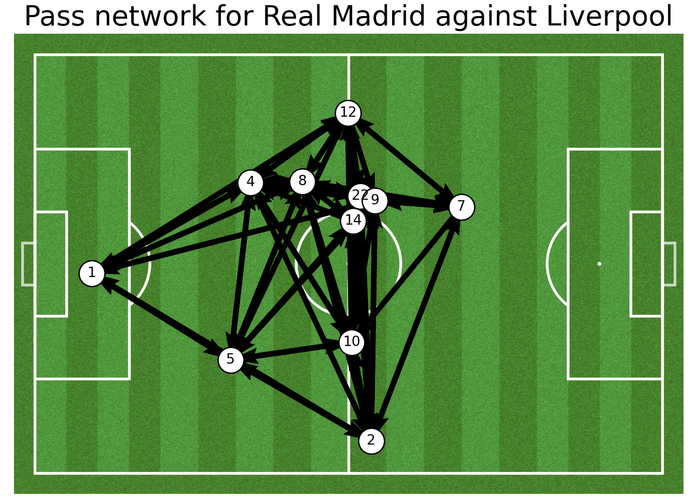
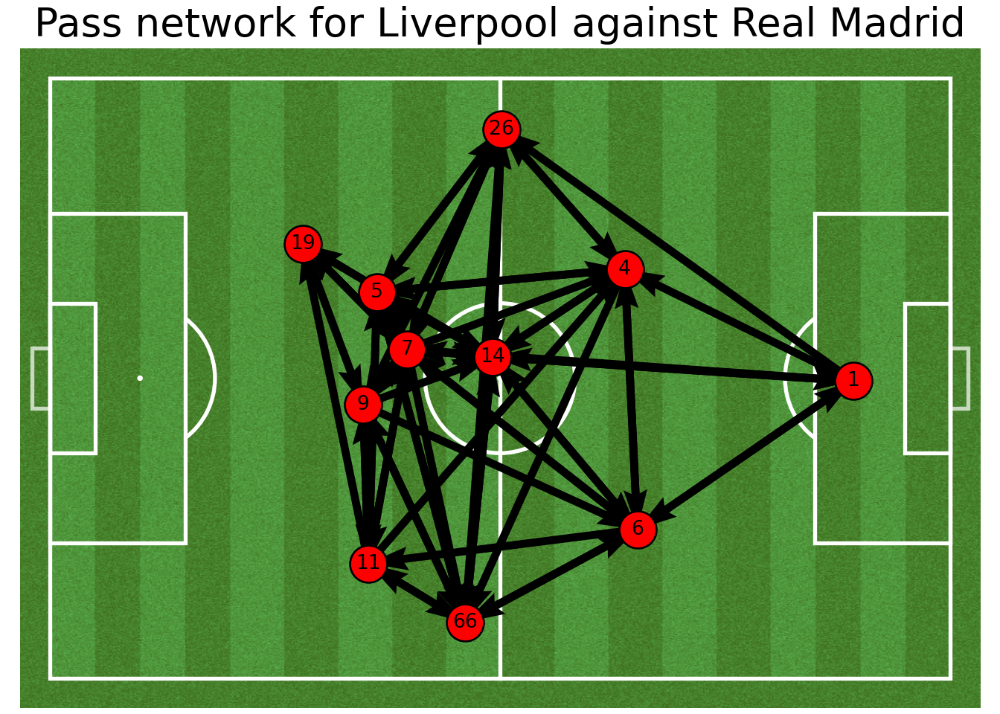
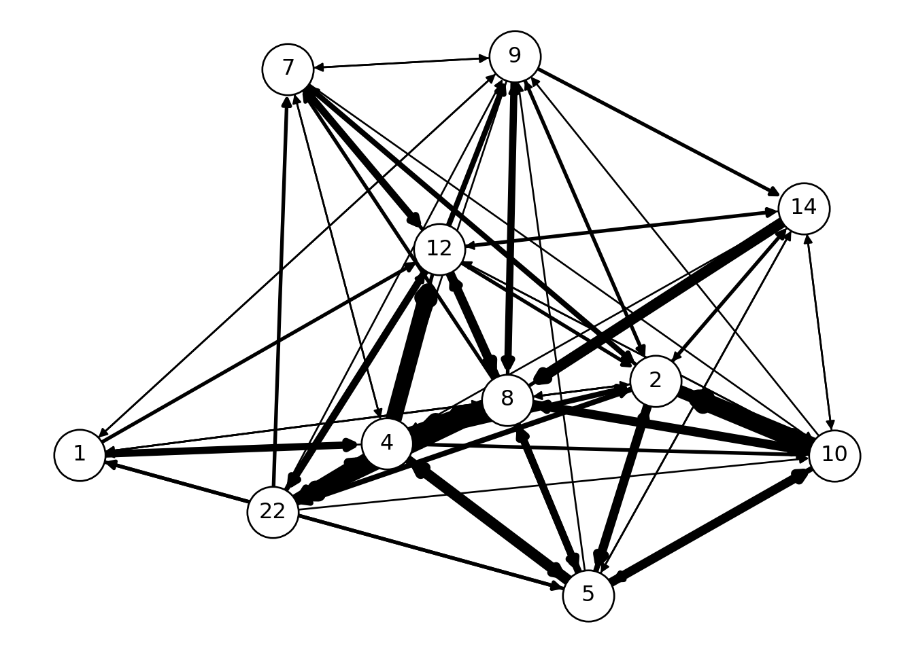
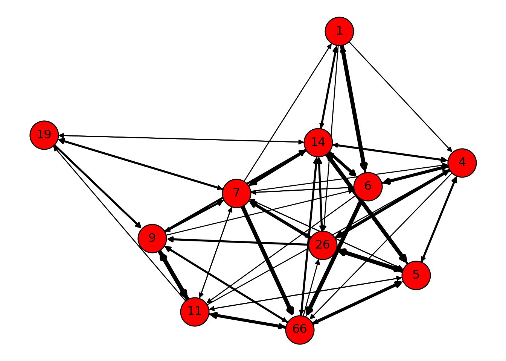
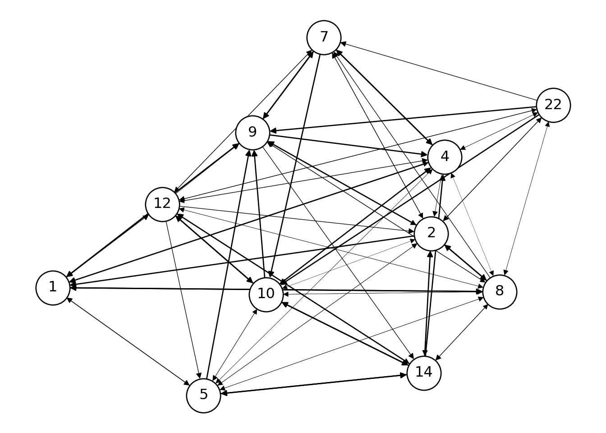
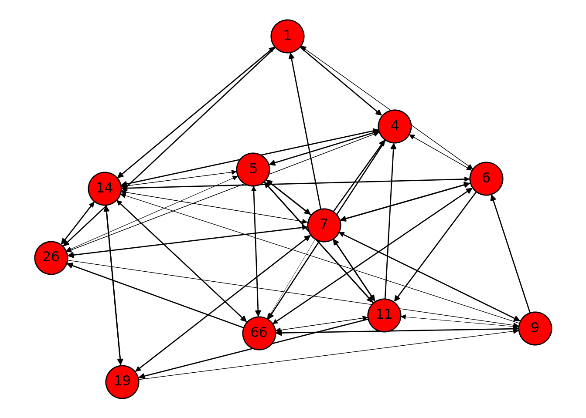

In our last tutorial we studied how to draw a pass map, a shot map and their corresponding heat maps. We used statsbomb’s open even data from the match between Real Madrid and Barcelona, which Real Madrid ended up winning 2-0. In this post we will again use statsbomb’s open event passing data (from a separate game this time, which we will decide on the go) and visualize the resulting pass network of a particular team on the football pitch. We will then use basic concepts from complex network analysis literature to further analyze the network and deduce some results. We will employ the NetworkX Python package for the analysis purpose.
Let us pip install the package:
After installing the package we will import all the necessary packages and modules:
from statsbombpy import sb # statsbomb api
import matplotlib.pyplot as plt # matplotlib for plotting
from mplsoccer.pitch import Pitch # for drawing the football pitch
import seaborn as sns # seaborn for plotting useful statistical graphs
import numpy as np # numerical python package
import pandas as pd # pandas for manipulating and analysing data
import networkx as nx # package for complex network analysisLet us again work step by step to fetch the event data from a particular match:
## | | competition_id | season_id | country_name | competition_name | competition_gender | season_name | match_updated | match_available |
## |---:|-----------------:|------------:|:-------------------------|:------------------------|:---------------------|:--------------|:---------------------------|:---------------------------|
## | 0 | 16 | 4 | Europe | Champions League | male | 2018/2019 | 2021-04-19T17:36:05.724116 | 2021-04-19T17:36:05.724116 |
## | 1 | 16 | 1 | Europe | Champions League | male | 2017/2018 | 2021-01-23T21:55:30.425330 | 2021-01-23T21:55:30.425330 |
## | 2 | 16 | 2 | Europe | Champions League | male | 2016/2017 | 2020-08-26T12:33:15.869622 | 2020-07-29T05:00 |
## | 3 | 16 | 27 | Europe | Champions League | male | 2015/2016 | 2020-08-26T12:33:15.869622 | 2020-07-29T05:00 |
## | 4 | 16 | 26 | Europe | Champions League | male | 2014/2015 | 2020-08-26T12:33:15.869622 | 2020-07-29T05:00 |
## | 5 | 16 | 25 | Europe | Champions League | male | 2013/2014 | 2020-08-26T12:33:15.869622 | 2020-07-29T05:00 |
## | 6 | 16 | 24 | Europe | Champions League | male | 2012/2013 | 2020-08-26T12:33:15.869622 | 2020-07-29T05:00 |
## | 7 | 16 | 23 | Europe | Champions League | male | 2011/2012 | 2020-08-26T12:33:15.869622 | 2020-07-29T05:00 |
## | 8 | 16 | 22 | Europe | Champions League | male | 2010/2011 | 2020-07-29T05:00 | 2020-07-29T05:00 |
## | 9 | 16 | 21 | Europe | Champions League | male | 2009/2010 | 2020-07-29T05:00 | 2020-07-29T05:00 |
## | 10 | 16 | 41 | Europe | Champions League | male | 2008/2009 | 2020-08-30T10:18:39.435424 | 2020-08-30T10:18:39.435424 |
## | 11 | 16 | 39 | Europe | Champions League | male | 2006/2007 | 2021-03-31T04:18:30.437060 | 2021-03-31T04:18:30.437060 |
## | 12 | 16 | 37 | Europe | Champions League | male | 2004/2005 | 2021-04-01T06:18:57.459032 | 2021-04-01T06:18:57.459032 |
## | 13 | 16 | 44 | Europe | Champions League | male | 2003/2004 | 2021-04-01T00:34:59.472485 | 2021-04-01T00:34:59.472485 |
## | 14 | 16 | 76 | Europe | Champions League | male | 1999/2000 | 2020-07-29T05:00 | 2020-07-29T05:00 |
## | 15 | 37 | 42 | England | FA Women's Super League | female | 2019/2020 | 2021-04-28T19:48:01.172671 | 2021-04-28T19:48:01.172671 |
## | 16 | 37 | 4 | England | FA Women's Super League | female | 2018/2019 | 2021-04-28T19:48:01.166958 | 2021-04-28T19:48:01.166958 |
## | 17 | 43 | 3 | International | FIFA World Cup | male | 2018 | 2020-10-25T14:03:50.263266 | 2020-10-25T14:03:50.263266 |
## | 18 | 11 | 42 | Spain | La Liga | male | 2019/2020 | 2020-12-18T12:10:38.985394 | 2020-12-18T12:10:38.985394 |
## | 19 | 11 | 4 | Spain | La Liga | male | 2018/2019 | 2021-04-20T03:24:51.029365 | 2021-04-20T03:24:51.029365 |
## | 20 | 11 | 1 | Spain | La Liga | male | 2017/2018 | 2021-04-19T17:36:05.805404 | 2021-04-19T17:36:05.805404 |
## | 21 | 11 | 2 | Spain | La Liga | male | 2016/2017 | 2021-02-02T23:24:58.985975 | 2021-02-02T23:24:58.985975 |
## | 22 | 11 | 27 | Spain | La Liga | male | 2015/2016 | 2020-07-29T05:00 | 2020-07-29T05:00 |
## | 23 | 11 | 26 | Spain | La Liga | male | 2014/2015 | 2020-07-29T05:00 | 2020-07-29T05:00 |
## | 24 | 11 | 25 | Spain | La Liga | male | 2013/2014 | 2020-07-29T05:00 | 2020-07-29T05:00 |
## | 25 | 11 | 24 | Spain | La Liga | male | 2012/2013 | 2020-07-29T05:00 | 2020-07-29T05:00 |
## | 26 | 11 | 23 | Spain | La Liga | male | 2011/2012 | 2020-07-29T05:00 | 2020-07-29T05:00 |
## | 27 | 11 | 22 | Spain | La Liga | male | 2010/2011 | 2020-07-29T05:00 | 2020-07-29T05:00 |
## | 28 | 11 | 21 | Spain | La Liga | male | 2009/2010 | 2020-07-29T05:00 | 2020-07-29T05:00 |
## | 29 | 11 | 41 | Spain | La Liga | male | 2008/2009 | 2020-07-29T05:00 | 2020-07-29T05:00 |
## | 30 | 11 | 40 | Spain | La Liga | male | 2007/2008 | 2020-07-29T05:00 | 2020-07-29T05:00 |
## | 31 | 11 | 39 | Spain | La Liga | male | 2006/2007 | 2020-07-29T05:00 | 2020-07-29T05:00 |
## | 32 | 11 | 38 | Spain | La Liga | male | 2005/2006 | 2020-07-29T05:00 | 2020-07-29T05:00 |
## | 33 | 11 | 37 | Spain | La Liga | male | 2004/2005 | 2020-07-29T05:00 | 2020-07-29T05:00 |
## | 34 | 49 | 3 | United States of America | NWSL | female | 2018 | 2020-07-29T05:00 | 2020-07-29T05:00 |
## | 35 | 2 | 44 | England | Premier League | male | 2003/2004 | 2020-08-31T20:40:28.969635 | 2020-08-31T20:40:28.969635 |
## | 36 | 72 | 30 | International | Women's World Cup | female | 2019 | 2020-07-29T05:00 | 2020-07-29T05:00 |Let us use the first row from comp where the competition_id is 16 and season_id is 4. We see that it holds the event data from UEFA Champions League ⚽ for the 2017-18 season. Let us now extract out the matches using the above information.
## | | match_id | match_date | kick_off | competition | season | home_team | away_team | home_score | away_score | match_status | match_status_360 | last_updated | last_updated_360 | match_week | competition_stage | stadium | referee | data_version | shot_fidelity_version | xy_fidelity_version |
## |---:|-----------:|:-------------|:-------------|:--------------------------|:----------|:------------|:------------|-------------:|-------------:|:---------------|:-------------------|:---------------------------|:-------------------|-------------:|:--------------------|:-----------------|:----------|:---------------|------------------------:|----------------------:|
## | 0 | 18245 | 2018-05-26 | 20:45:00.000 | Europe - Champions League | 2017/2018 | Real Madrid | Liverpool | 3 | 1 | available | unscheduled | 2021-01-23T21:55:30.425330 | | 7 | Final | NSK Olimpijs'kyj | M. Mažić | 1.1.0 | 2 | 2 |We see there is only one match available, having match_id set to 18245. It represents the final that took place between Real Madrid and Liverpool at Olimpiyskiy National Sports Complex, Moscow and Real Madrid won with the full time score: 3-1. Finally let us draw out the complete event data from this match:
We will print the first and the last 10 rows of the dataset to get an idea of how it looks and what information it provides us with:
## | | 50_50 | ball_receipt_outcome | ball_recovery_recovery_failure | block_offensive | carry_end_location | clearance_aerial_won | clearance_body_part | clearance_head | clearance_left_foot | clearance_right_foot | counterpress | dribble_nutmeg | dribble_outcome | dribble_overrun | duel_outcome | duel_type | duration | foul_committed_advantage | foul_committed_card | foul_committed_type | foul_won_advantage | foul_won_defensive | goalkeeper_body_part | goalkeeper_end_location | goalkeeper_outcome | goalkeeper_position | goalkeeper_punched_out | goalkeeper_technique | goalkeeper_type | id | index | injury_stoppage_in_chain | interception_outcome | location | match_id | minute | off_camera | out | pass_aerial_won | pass_angle | pass_assisted_shot_id | pass_body_part | pass_cross | pass_cut_back | pass_end_location | pass_goal_assist | pass_height | pass_inswinging | pass_length | pass_miscommunication | pass_outcome | pass_outswinging | pass_recipient | pass_shot_assist | pass_straight | pass_switch | pass_technique | pass_through_ball | pass_type | period | play_pattern | player | position | possession | possession_team | related_events | second | shot_aerial_won | shot_body_part | shot_end_location | shot_first_time | shot_freeze_frame | shot_key_pass_id | shot_one_on_one | shot_outcome | shot_redirect | shot_statsbomb_xg | shot_technique | shot_type | substitution_outcome | substitution_replacement | tactics | team | timestamp | type | under_pressure |
## |---:|--------:|-----------------------:|---------------------------------:|------------------:|---------------------:|-----------------------:|----------------------:|-----------------:|----------------------:|-----------------------:|---------------:|-----------------:|------------------:|------------------:|---------------:|------------:|-----------:|---------------------------:|----------------------:|----------------------:|---------------------:|---------------------:|-----------------------:|--------------------------:|---------------------:|----------------------:|-------------------------:|-----------------------:|------------------:|:-------------------------------------|--------:|---------------------------:|-----------------------:|:-------------|-----------:|---------:|-------------:|------:|------------------:|-------------:|------------------------:|:-----------------|-------------:|----------------:|:--------------------|-------------------:|:--------------|------------------:|--------------:|------------------------:|:---------------|-------------------:|:------------------------------------|-------------------:|----------------:|--------------:|-----------------:|--------------------:|:------------|---------:|:---------------|:--------------------|:----------------------|-------------:|:------------------|:-------------------------------------------------------------------------------------------------------------------------|---------:|------------------:|-----------------:|--------------------:|------------------:|--------------------:|-------------------:|------------------:|---------------:|----------------:|--------------------:|-----------------:|------------:|-----------------------:|---------------------------:|:---------------------------------------------------------------------------------------------------------------------------------------------------------------------------------------------------------------------------------------------------------------------------------------------------------------------------------------------------------------------------------------------------------------------------------------------------------------------------------------------------------------------------------------------------------------------------------------------------------------------------------------------------------------------------------------------------------------------------------------------------------------------------------------------------------------------------------------------------------------------------------------------------------------------------------------------------------------------------------------------------------------------------------------------------------------------------------------------------------------------------------------------------------------------------------------------------------------------------------------------------------------------------------------------------------------------------------------------------------------------------------------------------------------------------------------------------------------------------------------------------------------------------------------------|:------------|:-------------|:------------|-----------------:|
## | 0 | nan | nan | nan | nan | nan | nan | nan | nan | nan | nan | nan | nan | nan | nan | nan | nan | 0 | nan | nan | nan | nan | nan | nan | nan | nan | nan | nan | nan | nan | 5eee3ffd-f0c0-4532-868b-4a66cbf20cb8 | 1 | nan | nan | nan | 18245 | 0 | nan | nan | nan | nan | nan | nan | nan | nan | nan | nan | nan | nan | nan | nan | nan | nan | nan | nan | nan | nan | nan | nan | nan | 1 | Regular Play | nan | nan | 1 | Real Madrid | nan | 0 | nan | nan | nan | nan | nan | nan | nan | nan | nan | nan | nan | nan | nan | nan | {'formation': 41212, 'lineup': [{'player': {'id': 5597, 'name': 'Keylor Navas Gamboa'}, 'position': {'id': 1, 'name': 'Goalkeeper'}, 'jersey_number': 1}, {'player': {'id': 5721, 'name': 'Daniel Carvajal Ramos'}, 'position': {'id': 2, 'name': 'Right Back'}, 'jersey_number': 2}, {'player': {'id': 5485, 'name': 'Raphaël Varane'}, 'position': {'id': 3, 'name': 'Right Center Back'}, 'jersey_number': 5}, {'player': {'id': 5201, 'name': 'Sergio Ramos García'}, 'position': {'id': 5, 'name': 'Left Center Back'}, 'jersey_number': 4}, {'player': {'id': 5552, 'name': 'Marcelo Vieira da Silva Júnior'}, 'position': {'id': 6, 'name': 'Left Back'}, 'jersey_number': 12}, {'player': {'id': 5539, 'name': 'Carlos Henrique Casimiro'}, 'position': {'id': 10, 'name': 'Center Defensive Midfield'}, 'jersey_number': 14}, {'player': {'id': 5463, 'name': 'Luka Modrić'}, 'position': {'id': 13, 'name': 'Right Center Midfield'}, 'jersey_number': 10}, {'player': {'id': 5574, 'name': 'Toni Kroos'}, 'position': {'id': 15, 'name': 'Left Center Midfield'}, 'jersey_number': 8}, {'player': {'id': 4926, 'name': 'Francisco Román Alarcón Suárez'}, 'position': {'id': 19, 'name': 'Center Attacking Midfield'}, 'jersey_number': 22}, {'player': {'id': 19677, 'name': 'Karim Benzema'}, 'position': {'id': 22, 'name': 'Right Center Forward'}, 'jersey_number': 9}, {'player': {'id': 5207, 'name': 'Cristiano Ronaldo dos Santos Aveiro'}, 'position': {'id': 24, 'name': 'Left Center Forward'}, 'jersey_number': 7}]} | Real Madrid | 00:00:00.000 | Starting XI | nan |
## | 1 | nan | nan | nan | nan | nan | nan | nan | nan | nan | nan | nan | nan | nan | nan | nan | nan | 0 | nan | nan | nan | nan | nan | nan | nan | nan | nan | nan | nan | nan | eaa65a92-02d3-4375-b2b7-7c2f679a620c | 2 | nan | nan | nan | 18245 | 0 | nan | nan | nan | nan | nan | nan | nan | nan | nan | nan | nan | nan | nan | nan | nan | nan | nan | nan | nan | nan | nan | nan | nan | 1 | Regular Play | nan | nan | 1 | Real Madrid | nan | 0 | nan | nan | nan | nan | nan | nan | nan | nan | nan | nan | nan | nan | nan | nan | {'formation': 433, 'lineup': [{'player': {'id': 3630, 'name': 'Loris Karius'}, 'position': {'id': 1, 'name': 'Goalkeeper'}, 'jersey_number': 1}, {'player': {'id': 3664, 'name': 'Trent Alexander-Arnold'}, 'position': {'id': 2, 'name': 'Right Back'}, 'jersey_number': 66}, {'player': {'id': 3471, 'name': 'Dejan Lovren'}, 'position': {'id': 3, 'name': 'Right Center Back'}, 'jersey_number': 6}, {'player': {'id': 3669, 'name': 'Virgil van Dijk'}, 'position': {'id': 5, 'name': 'Left Center Back'}, 'jersey_number': 4}, {'player': {'id': 3655, 'name': 'Andrew Robertson'}, 'position': {'id': 6, 'name': 'Left Back'}, 'jersey_number': 26}, {'player': {'id': 3532, 'name': 'Jordan Brian Henderson'}, 'position': {'id': 10, 'name': 'Center Defensive Midfield'}, 'jersey_number': 14}, {'player': {'id': 3567, 'name': 'Georginio Wijnaldum'}, 'position': {'id': 13, 'name': 'Right Center Midfield'}, 'jersey_number': 5}, {'player': {'id': 3473, 'name': 'James Philip Milner'}, 'position': {'id': 15, 'name': 'Left Center Midfield'}, 'jersey_number': 7}, {'player': {'id': 3531, 'name': 'Mohamed Salah'}, 'position': {'id': 17, 'name': 'Right Wing'}, 'jersey_number': 11}, {'player': {'id': 3629, 'name': 'Sadio Mané'}, 'position': {'id': 21, 'name': 'Left Wing'}, 'jersey_number': 19}, {'player': {'id': 3535, 'name': 'Roberto Firmino Barbosa de Oliveira'}, 'position': {'id': 23, 'name': 'Center Forward'}, 'jersey_number': 9}]} | Liverpool | 00:00:00.000 | Starting XI | nan |
## | 2 | nan | nan | nan | nan | nan | nan | nan | nan | nan | nan | nan | nan | nan | nan | nan | nan | 0 | nan | nan | nan | nan | nan | nan | nan | nan | nan | nan | nan | nan | 9c82d2e5-ebba-4825-b7f9-b11b04433ed8 | 3 | nan | nan | nan | 18245 | 0 | nan | nan | nan | nan | nan | nan | nan | nan | nan | nan | nan | nan | nan | nan | nan | nan | nan | nan | nan | nan | nan | nan | nan | 1 | Regular Play | nan | nan | 1 | Real Madrid | ['b791047a-3eea-452f-b3a9-212bd40cd7cb'] | 0 | nan | nan | nan | nan | nan | nan | nan | nan | nan | nan | nan | nan | nan | nan | nan | Real Madrid | 00:00:00.000 | Half Start | nan |
## | 3 | nan | nan | nan | nan | nan | nan | nan | nan | nan | nan | nan | nan | nan | nan | nan | nan | 0 | nan | nan | nan | nan | nan | nan | nan | nan | nan | nan | nan | nan | b791047a-3eea-452f-b3a9-212bd40cd7cb | 4 | nan | nan | nan | 18245 | 0 | nan | nan | nan | nan | nan | nan | nan | nan | nan | nan | nan | nan | nan | nan | nan | nan | nan | nan | nan | nan | nan | nan | nan | 1 | Regular Play | nan | nan | 1 | Real Madrid | ['9c82d2e5-ebba-4825-b7f9-b11b04433ed8'] | 0 | nan | nan | nan | nan | nan | nan | nan | nan | nan | nan | nan | nan | nan | nan | nan | Liverpool | 00:00:00.000 | Half Start | nan |
## | 4 | nan | nan | nan | nan | nan | nan | nan | nan | nan | nan | nan | nan | nan | nan | nan | nan | 0 | nan | nan | nan | nan | nan | nan | nan | nan | nan | nan | nan | nan | c6dbfa9c-faf1-4f33-986e-357706c33dd0 | 1924 | nan | nan | nan | 18245 | 45 | nan | nan | nan | nan | nan | nan | nan | nan | nan | nan | nan | nan | nan | nan | nan | nan | nan | nan | nan | nan | nan | nan | nan | 2 | From Goal Kick | nan | nan | 85 | Liverpool | ['85d8a8b2-022f-493b-a161-cb6baec082a5'] | 0 | nan | nan | nan | nan | nan | nan | nan | nan | nan | nan | nan | nan | nan | nan | nan | Liverpool | 00:00:00.000 | Half Start | nan |
## | 5 | nan | nan | nan | nan | nan | nan | nan | nan | nan | nan | nan | nan | nan | nan | nan | nan | 0 | nan | nan | nan | nan | nan | nan | nan | nan | nan | nan | nan | nan | 85d8a8b2-022f-493b-a161-cb6baec082a5 | 1925 | nan | nan | nan | 18245 | 45 | nan | nan | nan | nan | nan | nan | nan | nan | nan | nan | nan | nan | nan | nan | nan | nan | nan | nan | nan | nan | nan | nan | nan | 2 | From Goal Kick | nan | nan | 85 | Liverpool | ['c6dbfa9c-faf1-4f33-986e-357706c33dd0'] | 0 | nan | nan | nan | nan | nan | nan | nan | nan | nan | nan | nan | nan | nan | nan | nan | Real Madrid | 00:00:00.000 | Half Start | nan |
## | 6 | nan | nan | nan | nan | nan | nan | nan | nan | nan | nan | nan | nan | nan | nan | nan | nan | 1.73591 | nan | nan | nan | nan | nan | nan | nan | nan | nan | nan | nan | nan | 25be91a5-a084-42cb-8cc1-a0fe7b0f52f9 | 5 | nan | nan | [60.0, 40.0] | 18245 | 0 | nan | nan | nan | 3.09861 | nan | Right Foot | nan | nan | [32.1, 41.2] | nan | Ground Pass | nan | 27.9258 | nan | nan | nan | Dejan Lovren | nan | nan | nan | nan | nan | Kick Off | 1 | From Kick Off | James Philip Milner | Left Center Midfield | 2 | Liverpool | ['e1a3ac58-89f3-42c7-aacc-1592ad5ab8f3'] | 0 | nan | nan | nan | nan | nan | nan | nan | nan | nan | nan | nan | nan | nan | nan | nan | Liverpool | 00:00:00.371 | Pass | nan |
## | 7 | nan | nan | nan | nan | nan | nan | nan | nan | nan | nan | nan | nan | nan | nan | nan | nan | 3.77207 | nan | nan | nan | nan | nan | nan | nan | nan | nan | nan | nan | nan | b544eb38-7cc9-4cb5-99e9-ebac4fce9eb9 | 8 | nan | nan | [35.0, 40.8] | 18245 | 0 | nan | nan | nan | -0.30397 | nan | Right Foot | nan | nan | [92.7, 22.7] | nan | High Pass | nan | 60.4723 | nan | Incomplete | nan | Roberto Firmino Barbosa de Oliveira | nan | nan | nan | nan | nan | nan | 1 | From Kick Off | Dejan Lovren | Right Center Back | 2 | Liverpool | ['ad23249c-f7da-4e2d-aa13-8a13df1afc57', 'ae5939bf-8467-4dfa-95df-ebba7c70d4c8'] | 3 | nan | nan | nan | nan | nan | nan | nan | nan | nan | nan | nan | nan | nan | nan | nan | Liverpool | 00:00:03.275 | Pass | nan |
## | 8 | nan | nan | nan | nan | nan | nan | nan | nan | nan | nan | nan | nan | nan | nan | nan | nan | 0.793057 | nan | nan | nan | nan | nan | nan | nan | nan | nan | nan | nan | nan | 192c9629-1703-40ab-8498-cab869cf0144 | 12 | nan | nan | [27.4, 60.2] | 18245 | 0 | nan | nan | nan | 0.918927 | nan | Right Foot | nan | nan | [36.1, 71.6] | nan | High Pass | nan | 14.3405 | nan | nan | nan | Luka Modrić | nan | nan | nan | nan | nan | nan | 1 | Regular Play | Raphaël Varane | Right Center Back | 3 | Real Madrid | ['a88801db-695b-4a7e-ac98-48a2e1b8b61c'] | 8 | nan | nan | nan | nan | nan | nan | nan | nan | nan | nan | nan | nan | nan | nan | nan | Real Madrid | 00:00:08.236 | Pass | nan |
## | 9 | nan | nan | nan | nan | nan | nan | nan | nan | nan | nan | nan | nan | nan | nan | nan | nan | 0.987721 | nan | nan | nan | nan | nan | nan | nan | nan | nan | nan | nan | nan | 599fb72e-8baf-4d5b-815e-7beb8c54e6af | 17 | nan | nan | [35.3, 75.4] | 18245 | 0 | nan | nan | nan | 3.04884 | nan | Right Foot | nan | nan | [22.4, 76.6] | nan | Low Pass | nan | 12.9557 | nan | nan | nan | Daniel Carvajal Ramos | nan | nan | nan | nan | nan | nan | 1 | Regular Play | Luka Modrić | Right Center Midfield | 3 | Real Madrid | ['5016d9e2-20f6-4d4b-a19f-3c7d5999c8d4', '77afbacb-6fe9-47a2-857b-98c47a785e6a', 'b9d35239-8e68-4d04-a74d-ec653114de99'] | 10 | nan | nan | nan | nan | nan | nan | nan | nan | nan | nan | nan | nan | nan | nan | nan | Real Madrid | 00:00:10.701 | Pass | 1 |## | | 50_50 | ball_receipt_outcome | ball_recovery_recovery_failure | block_offensive | carry_end_location | clearance_aerial_won | clearance_body_part | clearance_head | clearance_left_foot | clearance_right_foot | counterpress | dribble_nutmeg | dribble_outcome | dribble_overrun | duel_outcome | duel_type | duration | foul_committed_advantage | foul_committed_card | foul_committed_type | foul_won_advantage | foul_won_defensive | goalkeeper_body_part | goalkeeper_end_location | goalkeeper_outcome | goalkeeper_position | goalkeeper_punched_out | goalkeeper_technique | goalkeeper_type | id | index | injury_stoppage_in_chain | interception_outcome | location | match_id | minute | off_camera | out | pass_aerial_won | pass_angle | pass_assisted_shot_id | pass_body_part | pass_cross | pass_cut_back | pass_end_location | pass_goal_assist | pass_height | pass_inswinging | pass_length | pass_miscommunication | pass_outcome | pass_outswinging | pass_recipient | pass_shot_assist | pass_straight | pass_switch | pass_technique | pass_through_ball | pass_type | period | play_pattern | player | position | possession | possession_team | related_events | second | shot_aerial_won | shot_body_part | shot_end_location | shot_first_time | shot_freeze_frame | shot_key_pass_id | shot_one_on_one | shot_outcome | shot_redirect | shot_statsbomb_xg | shot_technique | shot_type | substitution_outcome | substitution_replacement | tactics | team | timestamp | type | under_pressure |
## |-----:|--------:|-----------------------:|---------------------------------:|------------------:|---------------------:|-----------------------:|----------------------:|-----------------:|----------------------:|-----------------------:|---------------:|-----------------:|------------------:|------------------:|---------------:|------------:|-----------:|---------------------------:|----------------------:|----------------------:|---------------------:|---------------------:|-----------------------:|--------------------------:|---------------------:|----------------------:|-------------------------:|-----------------------:|------------------:|:-------------------------------------|--------:|---------------------------:|-----------------------:|:--------------|-----------:|---------:|-------------:|------:|------------------:|-------------:|------------------------:|-----------------:|-------------:|----------------:|--------------------:|-------------------:|--------------:|------------------:|--------------:|------------------------:|---------------:|-------------------:|-----------------:|-------------------:|----------------:|--------------:|-----------------:|--------------------:|------------:|---------:|:---------------|:--------------------|:---------------------|-------------:|:------------------|:-----------------------------------------|---------:|------------------:|-----------------:|--------------------:|------------------:|--------------------:|-------------------:|------------------:|---------------:|----------------:|--------------------:|-----------------:|------------:|:-----------------------|:---------------------------|:-------------------------------------------------------------------------------------------------------------------------------------------------------------------------------------------------------------------------------------------------------------------------------------------------------------------------------------------------------------------------------------------------------------------------------------------------------------------------------------------------------------------------------------------------------------------------------------------------------------------------------------------------------------------------------------------------------------------------------------------------------------------------------------------------------------------------------------------------------------------------------------------------------------------------------------------------------------------------------------------------------------------------------------------------------------------------------------------------------------------------------------------------------------------------------------------------------------------------------------------------------------------------------------------------------------------------------------------------------------------------------------------------------------------------------------------------------------------------------------------------------------------|:------------|:-------------|:---------------|-----------------:|
## | 3487 | nan | nan | nan | nan | nan | nan | nan | nan | nan | nan | nan | nan | nan | nan | nan | nan | 0 | nan | nan | nan | nan | nan | nan | nan | nan | nan | nan | nan | nan | 8fafbd4c-f4e0-4bc4-a518-9a27dee8c354 | 3199 | nan | nan | nan | 18245 | 82 | nan | nan | nan | nan | nan | nan | nan | nan | nan | nan | nan | nan | nan | nan | nan | nan | nan | nan | nan | nan | nan | nan | nan | 2 | From Throw In | James Philip Milner | Left Center Midfield | 146 | Real Madrid | nan | 27 | nan | nan | nan | nan | nan | nan | nan | nan | nan | nan | nan | nan | Tactical | Emre Can | nan | Liverpool | 00:37:27.766 | Substitution | nan |
## | 3488 | nan | nan | nan | nan | nan | nan | nan | nan | nan | nan | nan | nan | nan | nan | nan | nan | 0 | nan | nan | nan | nan | nan | nan | nan | nan | nan | nan | nan | nan | bcb01505-642d-4b35-9fb6-63bec1bf79d9 | 3349 | nan | nan | nan | 18245 | 88 | nan | nan | nan | nan | nan | nan | nan | nan | nan | nan | nan | nan | nan | nan | nan | nan | nan | nan | nan | nan | nan | nan | nan | 2 | From Free Kick | Karim Benzema | Center Forward | 154 | Liverpool | nan | 21 | nan | nan | nan | nan | nan | nan | nan | nan | nan | nan | nan | nan | Tactical | Marco Asensio Willemsen | nan | Real Madrid | 00:43:21.957 | Substitution | nan |
## | 3489 | nan | nan | nan | nan | nan | nan | nan | nan | nan | nan | nan | nan | nan | nan | nan | nan | 0 | nan | nan | nan | nan | nan | nan | nan | nan | nan | nan | nan | nan | 7062c012-6d9c-4d89-833c-b91c427676ed | 1278 | nan | nan | nan | 18245 | 31 | nan | nan | nan | nan | nan | nan | nan | nan | nan | nan | nan | nan | nan | nan | nan | nan | nan | nan | nan | nan | nan | nan | nan | 1 | From Throw In | nan | nan | 60 | Real Madrid | nan | 41 | nan | nan | nan | nan | nan | nan | nan | nan | nan | nan | nan | nan | nan | nan | {'formation': 433, 'lineup': [{'player': {'id': 3630, 'name': 'Loris Karius'}, 'position': {'id': 1, 'name': 'Goalkeeper'}, 'jersey_number': 1}, {'player': {'id': 3664, 'name': 'Trent Alexander-Arnold'}, 'position': {'id': 2, 'name': 'Right Back'}, 'jersey_number': 66}, {'player': {'id': 3471, 'name': 'Dejan Lovren'}, 'position': {'id': 3, 'name': 'Right Center Back'}, 'jersey_number': 6}, {'player': {'id': 3669, 'name': 'Virgil van Dijk'}, 'position': {'id': 5, 'name': 'Left Center Back'}, 'jersey_number': 4}, {'player': {'id': 3655, 'name': 'Andrew Robertson'}, 'position': {'id': 6, 'name': 'Left Back'}, 'jersey_number': 26}, {'player': {'id': 3532, 'name': 'Jordan Brian Henderson'}, 'position': {'id': 10, 'name': 'Center Defensive Midfield'}, 'jersey_number': 14}, {'player': {'id': 3567, 'name': 'Georginio Wijnaldum'}, 'position': {'id': 13, 'name': 'Right Center Midfield'}, 'jersey_number': 5}, {'player': {'id': 3473, 'name': 'James Philip Milner'}, 'position': {'id': 15, 'name': 'Left Center Midfield'}, 'jersey_number': 7}, {'player': {'id': 3629, 'name': 'Sadio Mané'}, 'position': {'id': 17, 'name': 'Right Wing'}, 'jersey_number': 19}, {'player': {'id': 4090, 'name': 'Adam David Lallana'}, 'position': {'id': 21, 'name': 'Left Wing'}, 'jersey_number': 20}, {'player': {'id': 3535, 'name': 'Roberto Firmino Barbosa de Oliveira'}, 'position': {'id': 23, 'name': 'Center Forward'}, 'jersey_number': 9}]} | Liverpool | 00:31:41.916 | Tactical Shift | nan |
## | 3490 | nan | nan | nan | nan | nan | nan | nan | nan | nan | nan | nan | nan | nan | nan | nan | nan | 0 | nan | nan | nan | nan | nan | nan | nan | nan | nan | nan | nan | nan | c659bbc3-5700-4fcb-85ad-b0e13e42023f | 2431 | nan | nan | nan | 18245 | 61 | nan | nan | nan | nan | nan | nan | nan | nan | nan | nan | nan | nan | nan | nan | nan | nan | nan | nan | nan | nan | nan | nan | nan | 2 | From Corner | nan | nan | 110 | Real Madrid | nan | 1 | nan | nan | nan | nan | nan | nan | nan | nan | nan | nan | nan | nan | nan | nan | {'formation': 433, 'lineup': [{'player': {'id': 5597, 'name': 'Keylor Navas Gamboa'}, 'position': {'id': 1, 'name': 'Goalkeeper'}, 'jersey_number': 1}, {'player': {'id': 5202, 'name': 'José Ignacio Fernández Iglesias'}, 'position': {'id': 2, 'name': 'Right Back'}, 'jersey_number': 6}, {'player': {'id': 5485, 'name': 'Raphaël Varane'}, 'position': {'id': 3, 'name': 'Right Center Back'}, 'jersey_number': 5}, {'player': {'id': 5201, 'name': 'Sergio Ramos García'}, 'position': {'id': 5, 'name': 'Left Center Back'}, 'jersey_number': 4}, {'player': {'id': 5552, 'name': 'Marcelo Vieira da Silva Júnior'}, 'position': {'id': 6, 'name': 'Left Back'}, 'jersey_number': 12}, {'player': {'id': 5539, 'name': 'Carlos Henrique Casimiro'}, 'position': {'id': 10, 'name': 'Center Defensive Midfield'}, 'jersey_number': 14}, {'player': {'id': 5463, 'name': 'Luka Modrić'}, 'position': {'id': 13, 'name': 'Right Center Midfield'}, 'jersey_number': 10}, {'player': {'id': 5574, 'name': 'Toni Kroos'}, 'position': {'id': 15, 'name': 'Left Center Midfield'}, 'jersey_number': 8}, {'player': {'id': 6399, 'name': 'Gareth Frank Bale'}, 'position': {'id': 17, 'name': 'Right Wing'}, 'jersey_number': 11}, {'player': {'id': 5207, 'name': 'Cristiano Ronaldo dos Santos Aveiro'}, 'position': {'id': 21, 'name': 'Left Wing'}, 'jersey_number': 7}, {'player': {'id': 19677, 'name': 'Karim Benzema'}, 'position': {'id': 23, 'name': 'Center Forward'}, 'jersey_number': 9}]} | Real Madrid | 00:16:01.724 | Tactical Shift | nan |
## | 3491 | nan | nan | nan | nan | nan | nan | nan | nan | nan | nan | nan | nan | nan | nan | nan | nan | 0 | nan | nan | nan | nan | nan | nan | nan | nan | nan | nan | nan | nan | 5576a614-3af2-4fc0-8636-151a4508a1d7 | 3350 | nan | nan | nan | 18245 | 88 | nan | nan | nan | nan | nan | nan | nan | nan | nan | nan | nan | nan | nan | nan | nan | nan | nan | nan | nan | nan | nan | nan | nan | 2 | From Free Kick | nan | nan | 154 | Liverpool | nan | 34 | nan | nan | nan | nan | nan | nan | nan | nan | nan | nan | nan | nan | nan | nan | {'formation': 433, 'lineup': [{'player': {'id': 5597, 'name': 'Keylor Navas Gamboa'}, 'position': {'id': 1, 'name': 'Goalkeeper'}, 'jersey_number': 1}, {'player': {'id': 5202, 'name': 'José Ignacio Fernández Iglesias'}, 'position': {'id': 2, 'name': 'Right Back'}, 'jersey_number': 6}, {'player': {'id': 5485, 'name': 'Raphaël Varane'}, 'position': {'id': 3, 'name': 'Right Center Back'}, 'jersey_number': 5}, {'player': {'id': 5201, 'name': 'Sergio Ramos García'}, 'position': {'id': 5, 'name': 'Left Center Back'}, 'jersey_number': 4}, {'player': {'id': 5552, 'name': 'Marcelo Vieira da Silva Júnior'}, 'position': {'id': 6, 'name': 'Left Back'}, 'jersey_number': 12}, {'player': {'id': 5539, 'name': 'Carlos Henrique Casimiro'}, 'position': {'id': 10, 'name': 'Center Defensive Midfield'}, 'jersey_number': 14}, {'player': {'id': 5463, 'name': 'Luka Modrić'}, 'position': {'id': 13, 'name': 'Right Center Midfield'}, 'jersey_number': 10}, {'player': {'id': 5574, 'name': 'Toni Kroos'}, 'position': {'id': 15, 'name': 'Left Center Midfield'}, 'jersey_number': 8}, {'player': {'id': 6399, 'name': 'Gareth Frank Bale'}, 'position': {'id': 17, 'name': 'Right Wing'}, 'jersey_number': 11}, {'player': {'id': 5719, 'name': 'Marco Asensio Willemsen'}, 'position': {'id': 21, 'name': 'Left Wing'}, 'jersey_number': 20}, {'player': {'id': 5207, 'name': 'Cristiano Ronaldo dos Santos Aveiro'}, 'position': {'id': 23, 'name': 'Center Forward'}, 'jersey_number': 7}]} | Real Madrid | 00:43:34.632 | Tactical Shift | nan |
## | 3492 | nan | nan | nan | nan | nan | nan | nan | nan | nan | nan | nan | nan | nan | nan | nan | nan | 0 | nan | nan | nan | nan | nan | nan | nan | nan | nan | nan | nan | nan | 6bc1c5c3-86ff-4ecb-882c-5d0ecb24a654 | 1730 | nan | nan | [114.8, 41.4] | 18245 | 42 | nan | nan | nan | nan | nan | nan | nan | nan | nan | nan | nan | nan | nan | nan | nan | nan | nan | nan | nan | nan | nan | nan | nan | 1 | Regular Play | Karim Benzema | Right Center Forward | 73 | Real Madrid | nan | 21 | nan | nan | nan | nan | nan | nan | nan | nan | nan | nan | nan | nan | nan | nan | nan | Real Madrid | 00:42:21.211 | Offside | nan |
## | 3493 | nan | nan | nan | nan | nan | nan | nan | nan | nan | nan | nan | nan | nan | nan | nan | nan | 0 | nan | nan | nan | nan | nan | nan | nan | nan | nan | nan | nan | nan | cfb22dca-62c8-4c66-bee7-46c52cfb25fa | 1922 | nan | nan | nan | 18245 | 48 | nan | nan | nan | nan | nan | nan | nan | nan | nan | nan | nan | nan | nan | nan | nan | nan | nan | nan | nan | nan | nan | nan | nan | 1 | From Goal Kick | nan | nan | 85 | Liverpool | ['3344a029-5f88-48de-b70c-925c4363dcd3'] | 31 | nan | nan | nan | nan | nan | nan | nan | nan | nan | nan | nan | nan | nan | nan | nan | Real Madrid | 00:48:31.725 | Half End | nan |
## | 3494 | nan | nan | nan | nan | nan | nan | nan | nan | nan | nan | nan | nan | nan | nan | nan | nan | 0 | nan | nan | nan | nan | nan | nan | nan | nan | nan | nan | nan | nan | 3344a029-5f88-48de-b70c-925c4363dcd3 | 1923 | nan | nan | nan | 18245 | 48 | nan | nan | nan | nan | nan | nan | nan | nan | nan | nan | nan | nan | nan | nan | nan | nan | nan | nan | nan | nan | nan | nan | nan | 1 | From Goal Kick | nan | nan | 85 | Liverpool | ['cfb22dca-62c8-4c66-bee7-46c52cfb25fa'] | 31 | nan | nan | nan | nan | nan | nan | nan | nan | nan | nan | nan | nan | nan | nan | nan | Liverpool | 00:48:31.725 | Half End | nan |
## | 3495 | nan | nan | nan | nan | nan | nan | nan | nan | nan | nan | nan | nan | nan | nan | nan | nan | 0 | nan | nan | nan | nan | nan | nan | nan | nan | nan | nan | nan | nan | ce7d446a-e8bf-4631-bcf5-2bd323ba251e | 3496 | nan | nan | nan | 18245 | 93 | nan | nan | nan | nan | nan | nan | nan | nan | nan | nan | nan | nan | nan | nan | nan | nan | nan | nan | nan | nan | nan | nan | nan | 2 | Regular Play | nan | nan | 164 | Real Madrid | ['d19b2348-de55-4bbf-9b1f-e44d95aa3a77'] | 2 | nan | nan | nan | nan | nan | nan | nan | nan | nan | nan | nan | nan | nan | nan | nan | Liverpool | 00:48:02.893 | Half End | nan |
## | 3496 | nan | nan | nan | nan | nan | nan | nan | nan | nan | nan | nan | nan | nan | nan | nan | nan | 0 | nan | nan | nan | nan | nan | nan | nan | nan | nan | nan | nan | nan | d19b2348-de55-4bbf-9b1f-e44d95aa3a77 | 3497 | nan | nan | nan | 18245 | 93 | nan | nan | nan | nan | nan | nan | nan | nan | nan | nan | nan | nan | nan | nan | nan | nan | nan | nan | nan | nan | nan | nan | nan | 2 | Regular Play | nan | nan | 164 | Real Madrid | ['ce7d446a-e8bf-4631-bcf5-2bd323ba251e'] | 2 | nan | nan | nan | nan | nan | nan | nan | nan | nan | nan | nan | nan | nan | nan | nan | Real Madrid | 00:48:02.893 | Half End | nan |As we have been usually doing till now, let us print out the column names of events to get an overview of the relevant and the unnecessary rows for this tutorial.
## Index(['50_50', 'ball_receipt_outcome', 'ball_recovery_recovery_failure',
## 'block_offensive', 'carry_end_location', 'clearance_aerial_won',
## 'clearance_body_part', 'clearance_head', 'clearance_left_foot',
## 'clearance_right_foot', 'counterpress', 'dribble_nutmeg',
## 'dribble_outcome', 'dribble_overrun', 'duel_outcome', 'duel_type',
## 'duration', 'foul_committed_advantage', 'foul_committed_card',
## 'foul_committed_type', 'foul_won_advantage', 'foul_won_defensive',
## 'goalkeeper_body_part', 'goalkeeper_end_location', 'goalkeeper_outcome',
## 'goalkeeper_position', 'goalkeeper_punched_out', 'goalkeeper_technique',
## 'goalkeeper_type', 'id', 'index', 'injury_stoppage_in_chain',
## 'interception_outcome', 'location', 'match_id', 'minute', 'off_camera',
## 'out', 'pass_aerial_won', 'pass_angle', 'pass_assisted_shot_id',
## 'pass_body_part', 'pass_cross', 'pass_cut_back', 'pass_end_location',
## 'pass_goal_assist', 'pass_height', 'pass_inswinging', 'pass_length',
## 'pass_miscommunication', 'pass_outcome', 'pass_outswinging',
## 'pass_recipient', 'pass_shot_assist', 'pass_straight', 'pass_switch',
## 'pass_technique', 'pass_through_ball', 'pass_type', 'period',
## 'play_pattern', 'player', 'position', 'possession', 'possession_team',
## 'related_events', 'second', 'shot_aerial_won', 'shot_body_part',
## 'shot_end_location', 'shot_first_time', 'shot_freeze_frame',
## 'shot_key_pass_id', 'shot_one_on_one', 'shot_outcome', 'shot_redirect',
## 'shot_statsbomb_xg', 'shot_technique', 'shot_type',
## 'substitution_outcome', 'substitution_replacement', 'tactics', 'team',
## 'timestamp', 'type', 'under_pressure'],
## dtype='object')If we look into the events dataset, we notice that the tactics column provides us with team lineups, formations, player ids and their jersey number from both the teams. The corresponding row values for column type gives us an idea about whether it was the starting 11 formation or was a tactical shift or any other developments in the teams. Let us generate a completely new dataset only focusing on the tactics and the type columns. We will filter the data in such a way that the tactics column has no rows set to nan.
tact = events[events['tactics'].isnull() == False]
tact = tact[['tactics', 'team', 'type']]
print(tact.to_markdown())## | | tactics | team | type |
## |-----:|:---------------------------------------------------------------------------------------------------------------------------------------------------------------------------------------------------------------------------------------------------------------------------------------------------------------------------------------------------------------------------------------------------------------------------------------------------------------------------------------------------------------------------------------------------------------------------------------------------------------------------------------------------------------------------------------------------------------------------------------------------------------------------------------------------------------------------------------------------------------------------------------------------------------------------------------------------------------------------------------------------------------------------------------------------------------------------------------------------------------------------------------------------------------------------------------------------------------------------------------------------------------------------------------------------------------------------------------------------------------------------------------------------------------------------------------------------------------------------------------------------------------------------------------------|:------------|:---------------|
## | 0 | {'formation': 41212, 'lineup': [{'player': {'id': 5597, 'name': 'Keylor Navas Gamboa'}, 'position': {'id': 1, 'name': 'Goalkeeper'}, 'jersey_number': 1}, {'player': {'id': 5721, 'name': 'Daniel Carvajal Ramos'}, 'position': {'id': 2, 'name': 'Right Back'}, 'jersey_number': 2}, {'player': {'id': 5485, 'name': 'Raphaël Varane'}, 'position': {'id': 3, 'name': 'Right Center Back'}, 'jersey_number': 5}, {'player': {'id': 5201, 'name': 'Sergio Ramos García'}, 'position': {'id': 5, 'name': 'Left Center Back'}, 'jersey_number': 4}, {'player': {'id': 5552, 'name': 'Marcelo Vieira da Silva Júnior'}, 'position': {'id': 6, 'name': 'Left Back'}, 'jersey_number': 12}, {'player': {'id': 5539, 'name': 'Carlos Henrique Casimiro'}, 'position': {'id': 10, 'name': 'Center Defensive Midfield'}, 'jersey_number': 14}, {'player': {'id': 5463, 'name': 'Luka Modrić'}, 'position': {'id': 13, 'name': 'Right Center Midfield'}, 'jersey_number': 10}, {'player': {'id': 5574, 'name': 'Toni Kroos'}, 'position': {'id': 15, 'name': 'Left Center Midfield'}, 'jersey_number': 8}, {'player': {'id': 4926, 'name': 'Francisco Román Alarcón Suárez'}, 'position': {'id': 19, 'name': 'Center Attacking Midfield'}, 'jersey_number': 22}, {'player': {'id': 19677, 'name': 'Karim Benzema'}, 'position': {'id': 22, 'name': 'Right Center Forward'}, 'jersey_number': 9}, {'player': {'id': 5207, 'name': 'Cristiano Ronaldo dos Santos Aveiro'}, 'position': {'id': 24, 'name': 'Left Center Forward'}, 'jersey_number': 7}]} | Real Madrid | Starting XI |
## | 1 | {'formation': 433, 'lineup': [{'player': {'id': 3630, 'name': 'Loris Karius'}, 'position': {'id': 1, 'name': 'Goalkeeper'}, 'jersey_number': 1}, {'player': {'id': 3664, 'name': 'Trent Alexander-Arnold'}, 'position': {'id': 2, 'name': 'Right Back'}, 'jersey_number': 66}, {'player': {'id': 3471, 'name': 'Dejan Lovren'}, 'position': {'id': 3, 'name': 'Right Center Back'}, 'jersey_number': 6}, {'player': {'id': 3669, 'name': 'Virgil van Dijk'}, 'position': {'id': 5, 'name': 'Left Center Back'}, 'jersey_number': 4}, {'player': {'id': 3655, 'name': 'Andrew Robertson'}, 'position': {'id': 6, 'name': 'Left Back'}, 'jersey_number': 26}, {'player': {'id': 3532, 'name': 'Jordan Brian Henderson'}, 'position': {'id': 10, 'name': 'Center Defensive Midfield'}, 'jersey_number': 14}, {'player': {'id': 3567, 'name': 'Georginio Wijnaldum'}, 'position': {'id': 13, 'name': 'Right Center Midfield'}, 'jersey_number': 5}, {'player': {'id': 3473, 'name': 'James Philip Milner'}, 'position': {'id': 15, 'name': 'Left Center Midfield'}, 'jersey_number': 7}, {'player': {'id': 3531, 'name': 'Mohamed Salah'}, 'position': {'id': 17, 'name': 'Right Wing'}, 'jersey_number': 11}, {'player': {'id': 3629, 'name': 'Sadio Mané'}, 'position': {'id': 21, 'name': 'Left Wing'}, 'jersey_number': 19}, {'player': {'id': 3535, 'name': 'Roberto Firmino Barbosa de Oliveira'}, 'position': {'id': 23, 'name': 'Center Forward'}, 'jersey_number': 9}]} | Liverpool | Starting XI |
## | 3489 | {'formation': 433, 'lineup': [{'player': {'id': 3630, 'name': 'Loris Karius'}, 'position': {'id': 1, 'name': 'Goalkeeper'}, 'jersey_number': 1}, {'player': {'id': 3664, 'name': 'Trent Alexander-Arnold'}, 'position': {'id': 2, 'name': 'Right Back'}, 'jersey_number': 66}, {'player': {'id': 3471, 'name': 'Dejan Lovren'}, 'position': {'id': 3, 'name': 'Right Center Back'}, 'jersey_number': 6}, {'player': {'id': 3669, 'name': 'Virgil van Dijk'}, 'position': {'id': 5, 'name': 'Left Center Back'}, 'jersey_number': 4}, {'player': {'id': 3655, 'name': 'Andrew Robertson'}, 'position': {'id': 6, 'name': 'Left Back'}, 'jersey_number': 26}, {'player': {'id': 3532, 'name': 'Jordan Brian Henderson'}, 'position': {'id': 10, 'name': 'Center Defensive Midfield'}, 'jersey_number': 14}, {'player': {'id': 3567, 'name': 'Georginio Wijnaldum'}, 'position': {'id': 13, 'name': 'Right Center Midfield'}, 'jersey_number': 5}, {'player': {'id': 3473, 'name': 'James Philip Milner'}, 'position': {'id': 15, 'name': 'Left Center Midfield'}, 'jersey_number': 7}, {'player': {'id': 3629, 'name': 'Sadio Mané'}, 'position': {'id': 17, 'name': 'Right Wing'}, 'jersey_number': 19}, {'player': {'id': 4090, 'name': 'Adam David Lallana'}, 'position': {'id': 21, 'name': 'Left Wing'}, 'jersey_number': 20}, {'player': {'id': 3535, 'name': 'Roberto Firmino Barbosa de Oliveira'}, 'position': {'id': 23, 'name': 'Center Forward'}, 'jersey_number': 9}]} | Liverpool | Tactical Shift |
## | 3490 | {'formation': 433, 'lineup': [{'player': {'id': 5597, 'name': 'Keylor Navas Gamboa'}, 'position': {'id': 1, 'name': 'Goalkeeper'}, 'jersey_number': 1}, {'player': {'id': 5202, 'name': 'José Ignacio Fernández Iglesias'}, 'position': {'id': 2, 'name': 'Right Back'}, 'jersey_number': 6}, {'player': {'id': 5485, 'name': 'Raphaël Varane'}, 'position': {'id': 3, 'name': 'Right Center Back'}, 'jersey_number': 5}, {'player': {'id': 5201, 'name': 'Sergio Ramos García'}, 'position': {'id': 5, 'name': 'Left Center Back'}, 'jersey_number': 4}, {'player': {'id': 5552, 'name': 'Marcelo Vieira da Silva Júnior'}, 'position': {'id': 6, 'name': 'Left Back'}, 'jersey_number': 12}, {'player': {'id': 5539, 'name': 'Carlos Henrique Casimiro'}, 'position': {'id': 10, 'name': 'Center Defensive Midfield'}, 'jersey_number': 14}, {'player': {'id': 5463, 'name': 'Luka Modrić'}, 'position': {'id': 13, 'name': 'Right Center Midfield'}, 'jersey_number': 10}, {'player': {'id': 5574, 'name': 'Toni Kroos'}, 'position': {'id': 15, 'name': 'Left Center Midfield'}, 'jersey_number': 8}, {'player': {'id': 6399, 'name': 'Gareth Frank Bale'}, 'position': {'id': 17, 'name': 'Right Wing'}, 'jersey_number': 11}, {'player': {'id': 5207, 'name': 'Cristiano Ronaldo dos Santos Aveiro'}, 'position': {'id': 21, 'name': 'Left Wing'}, 'jersey_number': 7}, {'player': {'id': 19677, 'name': 'Karim Benzema'}, 'position': {'id': 23, 'name': 'Center Forward'}, 'jersey_number': 9}]} | Real Madrid | Tactical Shift |
## | 3491 | {'formation': 433, 'lineup': [{'player': {'id': 5597, 'name': 'Keylor Navas Gamboa'}, 'position': {'id': 1, 'name': 'Goalkeeper'}, 'jersey_number': 1}, {'player': {'id': 5202, 'name': 'José Ignacio Fernández Iglesias'}, 'position': {'id': 2, 'name': 'Right Back'}, 'jersey_number': 6}, {'player': {'id': 5485, 'name': 'Raphaël Varane'}, 'position': {'id': 3, 'name': 'Right Center Back'}, 'jersey_number': 5}, {'player': {'id': 5201, 'name': 'Sergio Ramos García'}, 'position': {'id': 5, 'name': 'Left Center Back'}, 'jersey_number': 4}, {'player': {'id': 5552, 'name': 'Marcelo Vieira da Silva Júnior'}, 'position': {'id': 6, 'name': 'Left Back'}, 'jersey_number': 12}, {'player': {'id': 5539, 'name': 'Carlos Henrique Casimiro'}, 'position': {'id': 10, 'name': 'Center Defensive Midfield'}, 'jersey_number': 14}, {'player': {'id': 5463, 'name': 'Luka Modrić'}, 'position': {'id': 13, 'name': 'Right Center Midfield'}, 'jersey_number': 10}, {'player': {'id': 5574, 'name': 'Toni Kroos'}, 'position': {'id': 15, 'name': 'Left Center Midfield'}, 'jersey_number': 8}, {'player': {'id': 6399, 'name': 'Gareth Frank Bale'}, 'position': {'id': 17, 'name': 'Right Wing'}, 'jersey_number': 11}, {'player': {'id': 5719, 'name': 'Marco Asensio Willemsen'}, 'position': {'id': 21, 'name': 'Left Wing'}, 'jersey_number': 20}, {'player': {'id': 5207, 'name': 'Cristiano Ronaldo dos Santos Aveiro'}, 'position': {'id': 23, 'name': 'Center Forward'}, 'jersey_number': 7}]} | Real Madrid | Tactical Shift |Let us focus only on the tactics for the starting 11 set up from both the teams. We will build and analyze the pass network generated from among the starting 11 players from either of the teams. If we look into the first two rows of the type column in tact, we see that they are set as 'Starting XI', one for each team. Let us separately fetch the data for the teams, filtering by type
tact = tact[tact['type'] == 'Starting XI']
tact_Real = tact[tact['team'] == 'Real Madrid']
tact_Liv = tact[tact['team'] == 'Liverpool']
tact_Real = tact_Real['tactics']
tact_Liv = tact_Liv['tactics']Let us see how tact_Real and tact_Barca look:
## | | tactics |
## |---:|:---------------------------------------------------------------------------------------------------------------------------------------------------------------------------------------------------------------------------------------------------------------------------------------------------------------------------------------------------------------------------------------------------------------------------------------------------------------------------------------------------------------------------------------------------------------------------------------------------------------------------------------------------------------------------------------------------------------------------------------------------------------------------------------------------------------------------------------------------------------------------------------------------------------------------------------------------------------------------------------------------------------------------------------------------------------------------------------------------------------------------------------------------------------------------------------------------------------------------------------------------------------------------------------------------------------------------------------------------------------------------------------------------------------------------------------------------------------------------------------------------------------------------------------------|
## | 0 | {'formation': 41212, 'lineup': [{'player': {'id': 5597, 'name': 'Keylor Navas Gamboa'}, 'position': {'id': 1, 'name': 'Goalkeeper'}, 'jersey_number': 1}, {'player': {'id': 5721, 'name': 'Daniel Carvajal Ramos'}, 'position': {'id': 2, 'name': 'Right Back'}, 'jersey_number': 2}, {'player': {'id': 5485, 'name': 'Raphaël Varane'}, 'position': {'id': 3, 'name': 'Right Center Back'}, 'jersey_number': 5}, {'player': {'id': 5201, 'name': 'Sergio Ramos García'}, 'position': {'id': 5, 'name': 'Left Center Back'}, 'jersey_number': 4}, {'player': {'id': 5552, 'name': 'Marcelo Vieira da Silva Júnior'}, 'position': {'id': 6, 'name': 'Left Back'}, 'jersey_number': 12}, {'player': {'id': 5539, 'name': 'Carlos Henrique Casimiro'}, 'position': {'id': 10, 'name': 'Center Defensive Midfield'}, 'jersey_number': 14}, {'player': {'id': 5463, 'name': 'Luka Modrić'}, 'position': {'id': 13, 'name': 'Right Center Midfield'}, 'jersey_number': 10}, {'player': {'id': 5574, 'name': 'Toni Kroos'}, 'position': {'id': 15, 'name': 'Left Center Midfield'}, 'jersey_number': 8}, {'player': {'id': 4926, 'name': 'Francisco Román Alarcón Suárez'}, 'position': {'id': 19, 'name': 'Center Attacking Midfield'}, 'jersey_number': 22}, {'player': {'id': 19677, 'name': 'Karim Benzema'}, 'position': {'id': 22, 'name': 'Right Center Forward'}, 'jersey_number': 9}, {'player': {'id': 5207, 'name': 'Cristiano Ronaldo dos Santos Aveiro'}, 'position': {'id': 24, 'name': 'Left Center Forward'}, 'jersey_number': 7}]} |## | | tactics |
## |---:|:-----------------------------------------------------------------------------------------------------------------------------------------------------------------------------------------------------------------------------------------------------------------------------------------------------------------------------------------------------------------------------------------------------------------------------------------------------------------------------------------------------------------------------------------------------------------------------------------------------------------------------------------------------------------------------------------------------------------------------------------------------------------------------------------------------------------------------------------------------------------------------------------------------------------------------------------------------------------------------------------------------------------------------------------------------------------------------------------------------------------------------------------------------------------------------------------------------------------------------------------------------------------------------------------------------------------------------------------------------------------------------------------------------------------------------------------------------------------------------|
## | 1 | {'formation': 433, 'lineup': [{'player': {'id': 3630, 'name': 'Loris Karius'}, 'position': {'id': 1, 'name': 'Goalkeeper'}, 'jersey_number': 1}, {'player': {'id': 3664, 'name': 'Trent Alexander-Arnold'}, 'position': {'id': 2, 'name': 'Right Back'}, 'jersey_number': 66}, {'player': {'id': 3471, 'name': 'Dejan Lovren'}, 'position': {'id': 3, 'name': 'Right Center Back'}, 'jersey_number': 6}, {'player': {'id': 3669, 'name': 'Virgil van Dijk'}, 'position': {'id': 5, 'name': 'Left Center Back'}, 'jersey_number': 4}, {'player': {'id': 3655, 'name': 'Andrew Robertson'}, 'position': {'id': 6, 'name': 'Left Back'}, 'jersey_number': 26}, {'player': {'id': 3532, 'name': 'Jordan Brian Henderson'}, 'position': {'id': 10, 'name': 'Center Defensive Midfield'}, 'jersey_number': 14}, {'player': {'id': 3567, 'name': 'Georginio Wijnaldum'}, 'position': {'id': 13, 'name': 'Right Center Midfield'}, 'jersey_number': 5}, {'player': {'id': 3473, 'name': 'James Philip Milner'}, 'position': {'id': 15, 'name': 'Left Center Midfield'}, 'jersey_number': 7}, {'player': {'id': 3531, 'name': 'Mohamed Salah'}, 'position': {'id': 17, 'name': 'Right Wing'}, 'jersey_number': 11}, {'player': {'id': 3629, 'name': 'Sadio Mané'}, 'position': {'id': 21, 'name': 'Left Wing'}, 'jersey_number': 19}, {'player': {'id': 3535, 'name': 'Roberto Firmino Barbosa de Oliveira'}, 'position': {'id': 23, 'name': 'Center Forward'}, 'jersey_number': 9}]} |So both tact_Real and tact_Liv are dataframes made of single rows with their indices (Which we will use to extract the data), and the tactics column is made up of a Python dict object. For now we are only interested in the key 'lineup' to get all the information about the players from the teams.
We will use the from_dict() function provided by pandas to convert the dictionary into a dataframe.
## | | player | position | jersey_number |
## |---:|:------------------------------------------------------------|:------------------------------------------------|----------------:|
## | 0 | {'id': 5597, 'name': 'Keylor Navas Gamboa'} | {'id': 1, 'name': 'Goalkeeper'} | 1 |
## | 1 | {'id': 5721, 'name': 'Daniel Carvajal Ramos'} | {'id': 2, 'name': 'Right Back'} | 2 |
## | 2 | {'id': 5485, 'name': 'Raphaël Varane'} | {'id': 3, 'name': 'Right Center Back'} | 5 |
## | 3 | {'id': 5201, 'name': 'Sergio Ramos García'} | {'id': 5, 'name': 'Left Center Back'} | 4 |
## | 4 | {'id': 5552, 'name': 'Marcelo Vieira da Silva Júnior'} | {'id': 6, 'name': 'Left Back'} | 12 |
## | 5 | {'id': 5539, 'name': 'Carlos Henrique Casimiro'} | {'id': 10, 'name': 'Center Defensive Midfield'} | 14 |
## | 6 | {'id': 5463, 'name': 'Luka Modrić'} | {'id': 13, 'name': 'Right Center Midfield'} | 10 |
## | 7 | {'id': 5574, 'name': 'Toni Kroos'} | {'id': 15, 'name': 'Left Center Midfield'} | 8 |
## | 8 | {'id': 4926, 'name': 'Francisco Román Alarcón Suárez'} | {'id': 19, 'name': 'Center Attacking Midfield'} | 22 |
## | 9 | {'id': 19677, 'name': 'Karim Benzema'} | {'id': 22, 'name': 'Right Center Forward'} | 9 |
## | 10 | {'id': 5207, 'name': 'Cristiano Ronaldo dos Santos Aveiro'} | {'id': 24, 'name': 'Left Center Forward'} | 7 |## | | player | position | jersey_number |
## |---:|:------------------------------------------------------------|:------------------------------------------------|----------------:|
## | 0 | {'id': 3630, 'name': 'Loris Karius'} | {'id': 1, 'name': 'Goalkeeper'} | 1 |
## | 1 | {'id': 3664, 'name': 'Trent Alexander-Arnold'} | {'id': 2, 'name': 'Right Back'} | 66 |
## | 2 | {'id': 3471, 'name': 'Dejan Lovren'} | {'id': 3, 'name': 'Right Center Back'} | 6 |
## | 3 | {'id': 3669, 'name': 'Virgil van Dijk'} | {'id': 5, 'name': 'Left Center Back'} | 4 |
## | 4 | {'id': 3655, 'name': 'Andrew Robertson'} | {'id': 6, 'name': 'Left Back'} | 26 |
## | 5 | {'id': 3532, 'name': 'Jordan Brian Henderson'} | {'id': 10, 'name': 'Center Defensive Midfield'} | 14 |
## | 6 | {'id': 3567, 'name': 'Georginio Wijnaldum'} | {'id': 13, 'name': 'Right Center Midfield'} | 5 |
## | 7 | {'id': 3473, 'name': 'James Philip Milner'} | {'id': 15, 'name': 'Left Center Midfield'} | 7 |
## | 8 | {'id': 3531, 'name': 'Mohamed Salah'} | {'id': 17, 'name': 'Right Wing'} | 11 |
## | 9 | {'id': 3629, 'name': 'Sadio Mané'} | {'id': 21, 'name': 'Left Wing'} | 19 |
## | 10 | {'id': 3535, 'name': 'Roberto Firmino Barbosa de Oliveira'} | {'id': 23, 'name': 'Center Forward'} | 9 |We are basically interested in the players name and their corresponding jersey numbers. We will use a simple for loop and store the information in seperate dictionaries for both the teams.
players_Real = {}
for i in range(len(lineup_Real)):
key = lineup_Real.player[i]['name']
val = lineup_Real.jersey_number[i]
players_Real[key] = str(val)
print(players_Real)## {'Keylor Navas Gamboa': '1', 'Daniel Carvajal Ramos': '2', 'Raphaël Varane': '5', 'Sergio Ramos García': '4', 'Marcelo Vieira da Silva Júnior': '12', 'Carlos Henrique Casimiro': '14', 'Luka Modrić': '10', 'Toni Kroos': '8', 'Francisco Román Alarcón Suárez': '22', 'Karim Benzema': '9', 'Cristiano Ronaldo dos Santos Aveiro': '7'}players_Liv = {}
for i in range(len(lineup_Liv)):
key = lineup_Liv.player[i]['name']
val = lineup_Liv.jersey_number[i]
players_Liv[key] = str(val)
print(players_Liv)## {'Loris Karius': '1', 'Trent Alexander-Arnold': '66', 'Dejan Lovren': '6', 'Virgil van Dijk': '4', 'Andrew Robertson': '26', 'Jordan Brian Henderson': '14', 'Georginio Wijnaldum': '5', 'James Philip Milner': '7', 'Mohamed Salah': '11', 'Sadio Mané': '19', 'Roberto Firmino Barbosa de Oliveira': '9'}So, we have collected the names and the jersey number of the players (starting 11) from both the teams in separate dictionaries named players_Real and players_Liv. These will come handy later!
Now from the events dataset we will extract out the relevant columns for our pass network analysis purposes.
events_pn = events[['minute', 'second', 'team', 'type', 'location', 'pass_end_location', 'pass_outcome', 'player']]## | | minute | second | team | type | location | pass_end_location | pass_outcome | player |
## |---:|---------:|---------:|:------------|:------------|:-------------|:--------------------|:---------------|:--------------------|
## | 0 | 0 | 0 | Real Madrid | Starting XI | nan | nan | nan | nan |
## | 1 | 0 | 0 | Liverpool | Starting XI | nan | nan | nan | nan |
## | 2 | 0 | 0 | Real Madrid | Half Start | nan | nan | nan | nan |
## | 3 | 0 | 0 | Liverpool | Half Start | nan | nan | nan | nan |
## | 4 | 45 | 0 | Liverpool | Half Start | nan | nan | nan | nan |
## | 5 | 45 | 0 | Real Madrid | Half Start | nan | nan | nan | nan |
## | 6 | 0 | 0 | Liverpool | Pass | [60.0, 40.0] | [32.1, 41.2] | nan | James Philip Milner |
## | 7 | 0 | 3 | Liverpool | Pass | [35.0, 40.8] | [92.7, 22.7] | Incomplete | Dejan Lovren |
## | 8 | 0 | 8 | Real Madrid | Pass | [27.4, 60.2] | [36.1, 71.6] | nan | Raphaël Varane |
## | 9 | 0 | 10 | Real Madrid | Pass | [35.3, 75.4] | [22.4, 76.6] | nan | Luka Modrić |## | | minute | second | team | type | location | pass_end_location | pass_outcome | player |
## |-----:|---------:|---------:|:------------|:---------------|:--------------|--------------------:|---------------:|:--------------------|
## | 3487 | 82 | 27 | Liverpool | Substitution | nan | nan | nan | James Philip Milner |
## | 3488 | 88 | 21 | Real Madrid | Substitution | nan | nan | nan | Karim Benzema |
## | 3489 | 31 | 41 | Liverpool | Tactical Shift | nan | nan | nan | nan |
## | 3490 | 61 | 1 | Real Madrid | Tactical Shift | nan | nan | nan | nan |
## | 3491 | 88 | 34 | Real Madrid | Tactical Shift | nan | nan | nan | nan |
## | 3492 | 42 | 21 | Real Madrid | Offside | [114.8, 41.4] | nan | nan | Karim Benzema |
## | 3493 | 48 | 31 | Real Madrid | Half End | nan | nan | nan | nan |
## | 3494 | 48 | 31 | Liverpool | Half End | nan | nan | nan | nan |
## | 3495 | 93 | 2 | Liverpool | Half End | nan | nan | nan | nan |
## | 3496 | 93 | 2 | Real Madrid | Half End | nan | nan | nan | nan |The next step is to filter the datset by teams and store them as new datasets:
events_Real = events_pn[events_pn['team'] == 'Real Madrid']
events_Liv = events_pn[events_pn['team'] == 'Liverpool']View the first 10 rows from both the datasets:
## | | minute | second | team | type | location | pass_end_location | pass_outcome | player |
## |---:|---------:|---------:|:------------|:------------|:-------------|:--------------------|:---------------|:-------------------------------|
## | 0 | 0 | 0 | Real Madrid | Starting XI | nan | nan | nan | nan |
## | 2 | 0 | 0 | Real Madrid | Half Start | nan | nan | nan | nan |
## | 5 | 45 | 0 | Real Madrid | Half Start | nan | nan | nan | nan |
## | 8 | 0 | 8 | Real Madrid | Pass | [27.4, 60.2] | [36.1, 71.6] | nan | Raphaël Varane |
## | 9 | 0 | 10 | Real Madrid | Pass | [35.3, 75.4] | [22.4, 76.6] | nan | Luka Modrić |
## | 10 | 0 | 11 | Real Madrid | Pass | [22.3, 76.6] | [33.4, 68.0] | nan | Daniel Carvajal Ramos |
## | 11 | 0 | 15 | Real Madrid | Pass | [36.2, 75.3] | [43.6, 62.0] | Incomplete | Carlos Henrique Casimiro |
## | 16 | 0 | 25 | Real Madrid | Pass | [14.7, 23.2] | [56.7, 6.2] | Incomplete | Sergio Ramos García |
## | 17 | 0 | 40 | Real Madrid | Pass | [57.5, 4.6] | [49.2, 15.6] | nan | Marcelo Vieira da Silva Júnior |
## | 18 | 0 | 43 | Real Madrid | Pass | [48.8, 18.4] | [49.8, 12.5] | nan | Carlos Henrique Casimiro |## | | minute | second | team | type | location | pass_end_location | pass_outcome | player |
## |---:|---------:|---------:|:----------|:------------|:-------------|:--------------------|:---------------|:------------------------------------|
## | 1 | 0 | 0 | Liverpool | Starting XI | nan | nan | nan | nan |
## | 3 | 0 | 0 | Liverpool | Half Start | nan | nan | nan | nan |
## | 4 | 45 | 0 | Liverpool | Half Start | nan | nan | nan | nan |
## | 6 | 0 | 0 | Liverpool | Pass | [60.0, 40.0] | [32.1, 41.2] | nan | James Philip Milner |
## | 7 | 0 | 3 | Liverpool | Pass | [35.0, 40.8] | [92.7, 22.7] | Incomplete | Dejan Lovren |
## | 12 | 0 | 16 | Liverpool | Pass | [76.5, 18.1] | [84.8, 9.5] | nan | Jordan Brian Henderson |
## | 13 | 0 | 18 | Liverpool | Pass | [84.4, 10.0] | [92.5, 19.1] | nan | Sadio Mané |
## | 14 | 0 | 19 | Liverpool | Pass | [91.6, 21.3] | [90.6, 50.7] | nan | Roberto Firmino Barbosa de Oliveira |
## | 15 | 0 | 22 | Liverpool | Pass | [92.2, 50.9] | [109.7, 46.4] | Incomplete | Mohamed Salah |
## | 25 | 1 | 7 | Liverpool | Pass | [42.0, 75.9] | [115.6, 59.3] | Incomplete | Trent Alexander-Arnold |As we are only interested in the pass network generation, we will filter the datasets by keeping those rows where type is set to Pass.
events_pn_Real = events_Real[events_Real['type'] == 'Pass']
events_pn_Liv = events_Liv[events_Liv['type'] == 'Pass']Again view the first 10 rows of the filtered datasets:
## | | minute | second | team | type | location | pass_end_location | pass_outcome | player |
## |---:|---------:|---------:|:------------|:-------|:-------------|:--------------------|:---------------|:-------------------------------|
## | 8 | 0 | 8 | Real Madrid | Pass | [27.4, 60.2] | [36.1, 71.6] | nan | Raphaël Varane |
## | 9 | 0 | 10 | Real Madrid | Pass | [35.3, 75.4] | [22.4, 76.6] | nan | Luka Modrić |
## | 10 | 0 | 11 | Real Madrid | Pass | [22.3, 76.6] | [33.4, 68.0] | nan | Daniel Carvajal Ramos |
## | 11 | 0 | 15 | Real Madrid | Pass | [36.2, 75.3] | [43.6, 62.0] | Incomplete | Carlos Henrique Casimiro |
## | 16 | 0 | 25 | Real Madrid | Pass | [14.7, 23.2] | [56.7, 6.2] | Incomplete | Sergio Ramos García |
## | 17 | 0 | 40 | Real Madrid | Pass | [57.5, 4.6] | [49.2, 15.6] | nan | Marcelo Vieira da Silva Júnior |
## | 18 | 0 | 43 | Real Madrid | Pass | [48.8, 18.4] | [49.8, 12.5] | nan | Carlos Henrique Casimiro |
## | 19 | 0 | 46 | Real Madrid | Pass | [48.8, 13.9] | [36.1, 56.3] | nan | Toni Kroos |
## | 20 | 0 | 52 | Real Madrid | Pass | [41.3, 54.8] | [34.4, 40.2] | nan | Raphaël Varane |
## | 21 | 0 | 55 | Real Madrid | Pass | [39.1, 36.5] | [65.4, 13.1] | nan | Sergio Ramos García |## | | minute | second | team | type | location | pass_end_location | pass_outcome | player |
## |---:|---------:|---------:|:----------|:-------|:-------------|:--------------------|:---------------|:------------------------------------|
## | 6 | 0 | 0 | Liverpool | Pass | [60.0, 40.0] | [32.1, 41.2] | nan | James Philip Milner |
## | 7 | 0 | 3 | Liverpool | Pass | [35.0, 40.8] | [92.7, 22.7] | Incomplete | Dejan Lovren |
## | 12 | 0 | 16 | Liverpool | Pass | [76.5, 18.1] | [84.8, 9.5] | nan | Jordan Brian Henderson |
## | 13 | 0 | 18 | Liverpool | Pass | [84.4, 10.0] | [92.5, 19.1] | nan | Sadio Mané |
## | 14 | 0 | 19 | Liverpool | Pass | [91.6, 21.3] | [90.6, 50.7] | nan | Roberto Firmino Barbosa de Oliveira |
## | 15 | 0 | 22 | Liverpool | Pass | [92.2, 50.9] | [109.7, 46.4] | Incomplete | Mohamed Salah |
## | 25 | 1 | 7 | Liverpool | Pass | [42.0, 75.9] | [115.6, 59.3] | Incomplete | Trent Alexander-Arnold |
## | 37 | 2 | 0 | Liverpool | Pass | [9.9, 39.1] | [28.1, 4.2] | nan | Virgil van Dijk |
## | 38 | 2 | 3 | Liverpool | Pass | [43.2, 2.8] | [50.1, 4.8] | Incomplete | Andrew Robertson |
## | 39 | 2 | 7 | Liverpool | Pass | [53.2, 0.1] | [50.0, 4.0] | nan | Andrew Robertson |Let us now very carefully observe the datasets. Suppose from the events_rn_Real dataset, we are focusing on the second and the third row (index 1 and 2). Luka Modrić makes the pass at around 0th minute and 10th second (Second row) and Daniel Carvajal Ramos receives the pass at around 0th minute and 11th second (third row). So in both the datasets we need to add two extra columns named as pass_maker and pass_receiver, where pass_maker column would be similar to player column and the pass_receiver column would be the player column whose index would be shifted by one place in the negative direction. This can be achieved by the shift() function provided by pandas. We will perform this operation on both events_pn_Real and events_pn_Liv.
## C:/Users/indra/AppData/Local/r-miniconda/envs/r-reticulate/python.exe:1: SettingWithCopyWarning:
## A value is trying to be set on a copy of a slice from a DataFrame.
## Try using .loc[row_indexer,col_indexer] = value instead
##
## See the caveats in the documentation: https://pandas.pydata.org/pandas-docs/stable/user_guide/indexing.html#returning-a-view-versus-a-copyevents_pn_Real['pass_receiver'] = events_pn_Real['player'].shift(-1)
events_pn_Liv['pass_maker'] = events_pn_Liv['player']
events_pn_Liv['pass_receiver'] = events_pn_Liv['player'].shift(-1)Let us check now how the modified datasets look:
## | | minute | second | team | type | location | pass_end_location | pass_outcome | player | pass_maker | pass_receiver |
## |---:|---------:|---------:|:------------|:-------|:-------------|:--------------------|:---------------|:-------------------------------|:-------------------------------|:------------------------------------|
## | 8 | 0 | 8 | Real Madrid | Pass | [27.4, 60.2] | [36.1, 71.6] | nan | Raphaël Varane | Raphaël Varane | Luka Modrić |
## | 9 | 0 | 10 | Real Madrid | Pass | [35.3, 75.4] | [22.4, 76.6] | nan | Luka Modrić | Luka Modrić | Daniel Carvajal Ramos |
## | 10 | 0 | 11 | Real Madrid | Pass | [22.3, 76.6] | [33.4, 68.0] | nan | Daniel Carvajal Ramos | Daniel Carvajal Ramos | Carlos Henrique Casimiro |
## | 11 | 0 | 15 | Real Madrid | Pass | [36.2, 75.3] | [43.6, 62.0] | Incomplete | Carlos Henrique Casimiro | Carlos Henrique Casimiro | Sergio Ramos García |
## | 16 | 0 | 25 | Real Madrid | Pass | [14.7, 23.2] | [56.7, 6.2] | Incomplete | Sergio Ramos García | Sergio Ramos García | Marcelo Vieira da Silva Júnior |
## | 17 | 0 | 40 | Real Madrid | Pass | [57.5, 4.6] | [49.2, 15.6] | nan | Marcelo Vieira da Silva Júnior | Marcelo Vieira da Silva Júnior | Carlos Henrique Casimiro |
## | 18 | 0 | 43 | Real Madrid | Pass | [48.8, 18.4] | [49.8, 12.5] | nan | Carlos Henrique Casimiro | Carlos Henrique Casimiro | Toni Kroos |
## | 19 | 0 | 46 | Real Madrid | Pass | [48.8, 13.9] | [36.1, 56.3] | nan | Toni Kroos | Toni Kroos | Raphaël Varane |
## | 20 | 0 | 52 | Real Madrid | Pass | [41.3, 54.8] | [34.4, 40.2] | nan | Raphaël Varane | Raphaël Varane | Sergio Ramos García |
## | 21 | 0 | 55 | Real Madrid | Pass | [39.1, 36.5] | [65.4, 13.1] | nan | Sergio Ramos García | Sergio Ramos García | Cristiano Ronaldo dos Santos Aveiro |## | | minute | second | team | type | location | pass_end_location | pass_outcome | player | pass_maker | pass_receiver |
## |---:|---------:|---------:|:----------|:-------|:-------------|:--------------------|:---------------|:------------------------------------|:------------------------------------|:------------------------------------|
## | 6 | 0 | 0 | Liverpool | Pass | [60.0, 40.0] | [32.1, 41.2] | nan | James Philip Milner | James Philip Milner | Dejan Lovren |
## | 7 | 0 | 3 | Liverpool | Pass | [35.0, 40.8] | [92.7, 22.7] | Incomplete | Dejan Lovren | Dejan Lovren | Jordan Brian Henderson |
## | 12 | 0 | 16 | Liverpool | Pass | [76.5, 18.1] | [84.8, 9.5] | nan | Jordan Brian Henderson | Jordan Brian Henderson | Sadio Mané |
## | 13 | 0 | 18 | Liverpool | Pass | [84.4, 10.0] | [92.5, 19.1] | nan | Sadio Mané | Sadio Mané | Roberto Firmino Barbosa de Oliveira |
## | 14 | 0 | 19 | Liverpool | Pass | [91.6, 21.3] | [90.6, 50.7] | nan | Roberto Firmino Barbosa de Oliveira | Roberto Firmino Barbosa de Oliveira | Mohamed Salah |
## | 15 | 0 | 22 | Liverpool | Pass | [92.2, 50.9] | [109.7, 46.4] | Incomplete | Mohamed Salah | Mohamed Salah | Trent Alexander-Arnold |
## | 25 | 1 | 7 | Liverpool | Pass | [42.0, 75.9] | [115.6, 59.3] | Incomplete | Trent Alexander-Arnold | Trent Alexander-Arnold | Virgil van Dijk |
## | 37 | 2 | 0 | Liverpool | Pass | [9.9, 39.1] | [28.1, 4.2] | nan | Virgil van Dijk | Virgil van Dijk | Andrew Robertson |
## | 38 | 2 | 3 | Liverpool | Pass | [43.2, 2.8] | [50.1, 4.8] | Incomplete | Andrew Robertson | Andrew Robertson | Andrew Robertson |
## | 39 | 2 | 7 | Liverpool | Pass | [53.2, 0.1] | [50.0, 4.0] | nan | Andrew Robertson | Andrew Robertson | James Philip Milner |Now, there might be passes which were not successful. Remember from the third post that in the statsbomb data passes whose pass_outcome are set as nan are actually the successful passes. We will again filter the datasets by successful passes:
events_pn_Real = events_pn_Real[events_pn_Real['pass_outcome'].isnull() == True].reset_index()
events_pn_Liv = events_pn_Liv[events_pn_Liv['pass_outcome'].isnull() == True].reset_index()The first 10 rows of the filtered datasets:
## | | index | minute | second | team | type | location | pass_end_location | pass_outcome | player | pass_maker | pass_receiver |
## |---:|--------:|---------:|---------:|:------------|:-------|:-------------|:--------------------|---------------:|:------------------------------------|:------------------------------------|:------------------------------------|
## | 0 | 8 | 0 | 8 | Real Madrid | Pass | [27.4, 60.2] | [36.1, 71.6] | nan | Raphaël Varane | Raphaël Varane | Luka Modrić |
## | 1 | 9 | 0 | 10 | Real Madrid | Pass | [35.3, 75.4] | [22.4, 76.6] | nan | Luka Modrić | Luka Modrić | Daniel Carvajal Ramos |
## | 2 | 10 | 0 | 11 | Real Madrid | Pass | [22.3, 76.6] | [33.4, 68.0] | nan | Daniel Carvajal Ramos | Daniel Carvajal Ramos | Carlos Henrique Casimiro |
## | 3 | 17 | 0 | 40 | Real Madrid | Pass | [57.5, 4.6] | [49.2, 15.6] | nan | Marcelo Vieira da Silva Júnior | Marcelo Vieira da Silva Júnior | Carlos Henrique Casimiro |
## | 4 | 18 | 0 | 43 | Real Madrid | Pass | [48.8, 18.4] | [49.8, 12.5] | nan | Carlos Henrique Casimiro | Carlos Henrique Casimiro | Toni Kroos |
## | 5 | 19 | 0 | 46 | Real Madrid | Pass | [48.8, 13.9] | [36.1, 56.3] | nan | Toni Kroos | Toni Kroos | Raphaël Varane |
## | 6 | 20 | 0 | 52 | Real Madrid | Pass | [41.3, 54.8] | [34.4, 40.2] | nan | Raphaël Varane | Raphaël Varane | Sergio Ramos García |
## | 7 | 21 | 0 | 55 | Real Madrid | Pass | [39.1, 36.5] | [65.4, 13.1] | nan | Sergio Ramos García | Sergio Ramos García | Cristiano Ronaldo dos Santos Aveiro |
## | 8 | 22 | 0 | 58 | Real Madrid | Pass | [64.5, 11.1] | [54.2, 5.6] | nan | Cristiano Ronaldo dos Santos Aveiro | Cristiano Ronaldo dos Santos Aveiro | Marcelo Vieira da Silva Júnior |
## | 9 | 23 | 0 | 59 | Real Madrid | Pass | [55.3, 5.5] | [83.9, 4.3] | nan | Marcelo Vieira da Silva Júnior | Marcelo Vieira da Silva Júnior | Karim Benzema |## | | index | minute | second | team | type | location | pass_end_location | pass_outcome | player | pass_maker | pass_receiver |
## |---:|--------:|---------:|---------:|:----------|:-------|:-------------|:--------------------|---------------:|:------------------------------------|:------------------------------------|:------------------------------------|
## | 0 | 6 | 0 | 0 | Liverpool | Pass | [60.0, 40.0] | [32.1, 41.2] | nan | James Philip Milner | James Philip Milner | Dejan Lovren |
## | 1 | 12 | 0 | 16 | Liverpool | Pass | [76.5, 18.1] | [84.8, 9.5] | nan | Jordan Brian Henderson | Jordan Brian Henderson | Sadio Mané |
## | 2 | 13 | 0 | 18 | Liverpool | Pass | [84.4, 10.0] | [92.5, 19.1] | nan | Sadio Mané | Sadio Mané | Roberto Firmino Barbosa de Oliveira |
## | 3 | 14 | 0 | 19 | Liverpool | Pass | [91.6, 21.3] | [90.6, 50.7] | nan | Roberto Firmino Barbosa de Oliveira | Roberto Firmino Barbosa de Oliveira | Mohamed Salah |
## | 4 | 37 | 2 | 0 | Liverpool | Pass | [9.9, 39.1] | [28.1, 4.2] | nan | Virgil van Dijk | Virgil van Dijk | Andrew Robertson |
## | 5 | 39 | 2 | 7 | Liverpool | Pass | [53.2, 0.1] | [50.0, 4.0] | nan | Andrew Robertson | Andrew Robertson | James Philip Milner |
## | 6 | 40 | 2 | 10 | Liverpool | Pass | [45.5, 4.0] | [27.4, 16.8] | nan | James Philip Milner | James Philip Milner | Virgil van Dijk |
## | 7 | 41 | 2 | 13 | Liverpool | Pass | [26.7, 19.6] | [27.8, 47.3] | nan | Virgil van Dijk | Virgil van Dijk | Dejan Lovren |
## | 8 | 42 | 2 | 16 | Liverpool | Pass | [28.0, 45.4] | [28.4, 21.4] | nan | Dejan Lovren | Dejan Lovren | Virgil van Dijk |
## | 9 | 43 | 2 | 19 | Liverpool | Pass | [30.4, 25.7] | [30.7, 52.9] | nan | Virgil van Dijk | Virgil van Dijk | Dejan Lovren |So it seems we have been able to logically clean and modify the datasets. Now we are only focused on building the pass netwrok among the players who were in the starting 11 from both the teams. So we will discard out the rows which consist of pass events that took place after the first substitution for either of the teams. Let us find the minute and second of the first substitution for both Real Madrid and Liverpool.
So let us filter the datasets events_Real and events_Liv by setting the type to be Substitution. This will give us the information of when the first substitution had taken place for the teams.
substitution_Real = events_Real[events_Real['type'] == 'Substitution']
substitution_Liv = events_Liv[events_Liv['type'] == 'Substitution']And let us view the datasets:
## | | minute | second | team | type | location | pass_end_location | pass_outcome | player |
## |-----:|---------:|---------:|:------------|:-------------|-----------:|--------------------:|---------------:|:-------------------------------|
## | 3485 | 36 | 17 | Real Madrid | Substitution | nan | nan | nan | Daniel Carvajal Ramos |
## | 3486 | 60 | 56 | Real Madrid | Substitution | nan | nan | nan | Francisco Román Alarcón Suárez |
## | 3488 | 88 | 21 | Real Madrid | Substitution | nan | nan | nan | Karim Benzema |## | | minute | second | team | type | location | pass_end_location | pass_outcome | player |
## |-----:|---------:|---------:|:----------|:-------------|-----------:|--------------------:|---------------:|:--------------------|
## | 3484 | 29 | 39 | Liverpool | Substitution | nan | nan | nan | Mohamed Salah |
## | 3487 | 82 | 27 | Liverpool | Substitution | nan | nan | nan | James Philip Milner |We see that the first substitution takes place for Real Madrid at the 36th minute and 17th second, whereas for Liverpool it takes place around 29th minute and 39th second. Let us find these out by writing a small Python code:
substitution_Real_minute = np.min(substitution_Real['minute'])
substitution_Real_minute_data = substitution_Real[substitution_Real['minute'] == substitution_Real_minute]
substitution_Real_second = np.min(substitution_Real_minute_data['second'])
print("minute =", substitution_Real_minute, "second =", substitution_Real_second)## minute = 36 second = 17substitution_Liv_minute = np.min(substitution_Liv['minute'])
substitution_Liv_minute_data = substitution_Liv[substitution_Liv['minute'] == substitution_Liv_minute]
substitution_Liv_second = np.min(substitution_Liv_minute_data['second'])
print("minute = ", substitution_Liv_minute, "second = ", substitution_Liv_second)## minute = 29 second = 39We see that we have gotten the correct timings of when the first substitutions had taken place. Now we filter our datasets by taking tose pass events that took place before the first substitutions
events_pn_Real = events_pn_Real[(events_pn_Real['minute'] <= substitution_Real_minute)]
events_pn_Liv = events_pn_Liv[(events_pn_Liv['minute'] <= substitution_Liv_minute)]Let us again print the first 10 rows of the renewed datasets:
## | | index | minute | second | team | type | location | pass_end_location | pass_outcome | player | pass_maker | pass_receiver |
## |---:|--------:|---------:|---------:|:------------|:-------|:-------------|:--------------------|---------------:|:------------------------------------|:------------------------------------|:------------------------------------|
## | 0 | 8 | 0 | 8 | Real Madrid | Pass | [27.4, 60.2] | [36.1, 71.6] | nan | Raphaël Varane | Raphaël Varane | Luka Modrić |
## | 1 | 9 | 0 | 10 | Real Madrid | Pass | [35.3, 75.4] | [22.4, 76.6] | nan | Luka Modrić | Luka Modrić | Daniel Carvajal Ramos |
## | 2 | 10 | 0 | 11 | Real Madrid | Pass | [22.3, 76.6] | [33.4, 68.0] | nan | Daniel Carvajal Ramos | Daniel Carvajal Ramos | Carlos Henrique Casimiro |
## | 3 | 17 | 0 | 40 | Real Madrid | Pass | [57.5, 4.6] | [49.2, 15.6] | nan | Marcelo Vieira da Silva Júnior | Marcelo Vieira da Silva Júnior | Carlos Henrique Casimiro |
## | 4 | 18 | 0 | 43 | Real Madrid | Pass | [48.8, 18.4] | [49.8, 12.5] | nan | Carlos Henrique Casimiro | Carlos Henrique Casimiro | Toni Kroos |
## | 5 | 19 | 0 | 46 | Real Madrid | Pass | [48.8, 13.9] | [36.1, 56.3] | nan | Toni Kroos | Toni Kroos | Raphaël Varane |
## | 6 | 20 | 0 | 52 | Real Madrid | Pass | [41.3, 54.8] | [34.4, 40.2] | nan | Raphaël Varane | Raphaël Varane | Sergio Ramos García |
## | 7 | 21 | 0 | 55 | Real Madrid | Pass | [39.1, 36.5] | [65.4, 13.1] | nan | Sergio Ramos García | Sergio Ramos García | Cristiano Ronaldo dos Santos Aveiro |
## | 8 | 22 | 0 | 58 | Real Madrid | Pass | [64.5, 11.1] | [54.2, 5.6] | nan | Cristiano Ronaldo dos Santos Aveiro | Cristiano Ronaldo dos Santos Aveiro | Marcelo Vieira da Silva Júnior |
## | 9 | 23 | 0 | 59 | Real Madrid | Pass | [55.3, 5.5] | [83.9, 4.3] | nan | Marcelo Vieira da Silva Júnior | Marcelo Vieira da Silva Júnior | Karim Benzema |## | | index | minute | second | team | type | location | pass_end_location | pass_outcome | player | pass_maker | pass_receiver |
## |---:|--------:|---------:|---------:|:----------|:-------|:-------------|:--------------------|---------------:|:------------------------------------|:------------------------------------|:------------------------------------|
## | 0 | 6 | 0 | 0 | Liverpool | Pass | [60.0, 40.0] | [32.1, 41.2] | nan | James Philip Milner | James Philip Milner | Dejan Lovren |
## | 1 | 12 | 0 | 16 | Liverpool | Pass | [76.5, 18.1] | [84.8, 9.5] | nan | Jordan Brian Henderson | Jordan Brian Henderson | Sadio Mané |
## | 2 | 13 | 0 | 18 | Liverpool | Pass | [84.4, 10.0] | [92.5, 19.1] | nan | Sadio Mané | Sadio Mané | Roberto Firmino Barbosa de Oliveira |
## | 3 | 14 | 0 | 19 | Liverpool | Pass | [91.6, 21.3] | [90.6, 50.7] | nan | Roberto Firmino Barbosa de Oliveira | Roberto Firmino Barbosa de Oliveira | Mohamed Salah |
## | 4 | 37 | 2 | 0 | Liverpool | Pass | [9.9, 39.1] | [28.1, 4.2] | nan | Virgil van Dijk | Virgil van Dijk | Andrew Robertson |
## | 5 | 39 | 2 | 7 | Liverpool | Pass | [53.2, 0.1] | [50.0, 4.0] | nan | Andrew Robertson | Andrew Robertson | James Philip Milner |
## | 6 | 40 | 2 | 10 | Liverpool | Pass | [45.5, 4.0] | [27.4, 16.8] | nan | James Philip Milner | James Philip Milner | Virgil van Dijk |
## | 7 | 41 | 2 | 13 | Liverpool | Pass | [26.7, 19.6] | [27.8, 47.3] | nan | Virgil van Dijk | Virgil van Dijk | Dejan Lovren |
## | 8 | 42 | 2 | 16 | Liverpool | Pass | [28.0, 45.4] | [28.4, 21.4] | nan | Dejan Lovren | Dejan Lovren | Virgil van Dijk |
## | 9 | 43 | 2 | 19 | Liverpool | Pass | [30.4, 25.7] | [30.7, 52.9] | nan | Virgil van Dijk | Virgil van Dijk | Dejan Lovren |Now from the datasets, we will split the location and the pass_end_location columns into two columns each representing the coordinates and name them as pass_maker_x, pass_maker_y, pass_receiver_x and pass_receiver_y.
Let us manipulate the dataset for Real Madrid first:
Loc = events_pn_Real['location']
Loc = pd.DataFrame(Loc.to_list(), columns=['pass_maker_x', 'pass_maker_y'])
Loc_end = events_pn_Real['pass_end_location']
Loc_end = pd.DataFrame(Loc_end.to_list(), columns=['pass_receiver_x', 'pass_receiver_y'])
events_pn_Real['pass_maker_x'] = Loc['pass_maker_x']
events_pn_Real['pass_maker_y'] = Loc['pass_maker_y']
events_pn_Real['pass_receiver_x'] = Loc_end['pass_receiver_x']
events_pn_Real['pass_receiver_y'] = Loc_end['pass_receiver_y']
events_pn_Real = events_pn_Real[['index', 'minute', 'second', 'team', 'type', 'pass_outcome', 'player', 'pass_maker', 'pass_receiver', 'pass_maker_x', 'pass_maker_y', 'pass_receiver_x', 'pass_receiver_y']]
print(events_pn_Real.head(10).to_markdown())## | | index | minute | second | team | type | pass_outcome | player | pass_maker | pass_receiver | pass_maker_x | pass_maker_y | pass_receiver_x | pass_receiver_y |
## |---:|--------:|---------:|---------:|:------------|:-------|---------------:|:------------------------------------|:------------------------------------|:------------------------------------|---------------:|---------------:|------------------:|------------------:|
## | 0 | 8 | 0 | 8 | Real Madrid | Pass | nan | Raphaël Varane | Raphaël Varane | Luka Modrić | 27.4 | 60.2 | 36.1 | 71.6 |
## | 1 | 9 | 0 | 10 | Real Madrid | Pass | nan | Luka Modrić | Luka Modrić | Daniel Carvajal Ramos | 35.3 | 75.4 | 22.4 | 76.6 |
## | 2 | 10 | 0 | 11 | Real Madrid | Pass | nan | Daniel Carvajal Ramos | Daniel Carvajal Ramos | Carlos Henrique Casimiro | 22.3 | 76.6 | 33.4 | 68 |
## | 3 | 17 | 0 | 40 | Real Madrid | Pass | nan | Marcelo Vieira da Silva Júnior | Marcelo Vieira da Silva Júnior | Carlos Henrique Casimiro | 57.5 | 4.6 | 49.2 | 15.6 |
## | 4 | 18 | 0 | 43 | Real Madrid | Pass | nan | Carlos Henrique Casimiro | Carlos Henrique Casimiro | Toni Kroos | 48.8 | 18.4 | 49.8 | 12.5 |
## | 5 | 19 | 0 | 46 | Real Madrid | Pass | nan | Toni Kroos | Toni Kroos | Raphaël Varane | 48.8 | 13.9 | 36.1 | 56.3 |
## | 6 | 20 | 0 | 52 | Real Madrid | Pass | nan | Raphaël Varane | Raphaël Varane | Sergio Ramos García | 41.3 | 54.8 | 34.4 | 40.2 |
## | 7 | 21 | 0 | 55 | Real Madrid | Pass | nan | Sergio Ramos García | Sergio Ramos García | Cristiano Ronaldo dos Santos Aveiro | 39.1 | 36.5 | 65.4 | 13.1 |
## | 8 | 22 | 0 | 58 | Real Madrid | Pass | nan | Cristiano Ronaldo dos Santos Aveiro | Cristiano Ronaldo dos Santos Aveiro | Marcelo Vieira da Silva Júnior | 64.5 | 11.1 | 54.2 | 5.6 |
## | 9 | 23 | 0 | 59 | Real Madrid | Pass | nan | Marcelo Vieira da Silva Júnior | Marcelo Vieira da Silva Júnior | Karim Benzema | 55.3 | 5.5 | 83.9 | 4.3 |Same manipulation for Liverpool:
Loc = events_pn_Liv['location']
Loc = pd.DataFrame(Loc.to_list(), columns=['pass_maker_x', 'pass_maker_y'])
Loc_end = events_pn_Liv['pass_end_location']
Loc_end = pd.DataFrame(Loc_end.to_list(), columns=['pass_receiver_x', 'pass_receiver_y'])
events_pn_Liv['pass_maker_x'] = Loc['pass_maker_x']
events_pn_Liv['pass_maker_y'] = Loc['pass_maker_y']
events_pn_Liv['pass_receiver_x'] = Loc_end['pass_receiver_x']
events_pn_Liv['pass_receiver_y'] = Loc_end['pass_receiver_y']
events_pn_Liv = events_pn_Liv[['index', 'minute', 'second', 'team', 'type', 'pass_outcome', 'player', 'pass_maker', 'pass_receiver', 'pass_maker_x', 'pass_maker_y', 'pass_receiver_x', 'pass_receiver_y']]
print(events_pn_Liv.head(10).to_markdown())## | | index | minute | second | team | type | pass_outcome | player | pass_maker | pass_receiver | pass_maker_x | pass_maker_y | pass_receiver_x | pass_receiver_y |
## |---:|--------:|---------:|---------:|:----------|:-------|---------------:|:------------------------------------|:------------------------------------|:------------------------------------|---------------:|---------------:|------------------:|------------------:|
## | 0 | 6 | 0 | 0 | Liverpool | Pass | nan | James Philip Milner | James Philip Milner | Dejan Lovren | 60 | 40 | 32.1 | 41.2 |
## | 1 | 12 | 0 | 16 | Liverpool | Pass | nan | Jordan Brian Henderson | Jordan Brian Henderson | Sadio Mané | 76.5 | 18.1 | 84.8 | 9.5 |
## | 2 | 13 | 0 | 18 | Liverpool | Pass | nan | Sadio Mané | Sadio Mané | Roberto Firmino Barbosa de Oliveira | 84.4 | 10 | 92.5 | 19.1 |
## | 3 | 14 | 0 | 19 | Liverpool | Pass | nan | Roberto Firmino Barbosa de Oliveira | Roberto Firmino Barbosa de Oliveira | Mohamed Salah | 91.6 | 21.3 | 90.6 | 50.7 |
## | 4 | 37 | 2 | 0 | Liverpool | Pass | nan | Virgil van Dijk | Virgil van Dijk | Andrew Robertson | 9.9 | 39.1 | 28.1 | 4.2 |
## | 5 | 39 | 2 | 7 | Liverpool | Pass | nan | Andrew Robertson | Andrew Robertson | James Philip Milner | 53.2 | 0.1 | 50 | 4 |
## | 6 | 40 | 2 | 10 | Liverpool | Pass | nan | James Philip Milner | James Philip Milner | Virgil van Dijk | 45.5 | 4 | 27.4 | 16.8 |
## | 7 | 41 | 2 | 13 | Liverpool | Pass | nan | Virgil van Dijk | Virgil van Dijk | Dejan Lovren | 26.7 | 19.6 | 27.8 | 47.3 |
## | 8 | 42 | 2 | 16 | Liverpool | Pass | nan | Dejan Lovren | Dejan Lovren | Virgil van Dijk | 28 | 45.4 | 28.4 | 21.4 |
## | 9 | 43 | 2 | 19 | Liverpool | Pass | nan | Virgil van Dijk | Virgil van Dijk | Dejan Lovren | 30.4 | 25.7 | 30.7 | 52.9 |Inspired by the way given here, we will take the average locations of the starting 11 players on the field for a unified construction of the pass network, and also will count the number of passes created by these player:
av_loc_Real = events_pn_Real.groupby('pass_maker').agg({'pass_maker_x':['mean'], 'pass_maker_y':['mean', 'count']})
print(av_loc_Real.to_markdown())## | pass_maker | ('pass_maker_x', 'mean') | ('pass_maker_y', 'mean') | ('pass_maker_y', 'count') |
## |:------------------------------------|---------------------------:|---------------------------:|----------------------------:|
## | Carlos Henrique Casimiro | 60.8455 | 31.8364 | 11 |
## | Cristiano Ronaldo dos Santos Aveiro | 81.58 | 29.16 | 10 |
## | Daniel Carvajal Ramos | 64.3417 | 73.875 | 24 |
## | Francisco Román Alarcón Suárez | 62.3235 | 27.0824 | 17 |
## | Karim Benzema | 65.0818 | 27.9364 | 11 |
## | Keylor Navas Gamboa | 10.87 | 41.81 | 10 |
## | Luka Modrić | 60.6048 | 55.0286 | 21 |
## | Marcelo Vieira da Silva Júnior | 59.8652 | 11.1304 | 23 |
## | Raphaël Varane | 37.4364 | 58.3545 | 22 |
## | Sergio Ramos García | 41.2824 | 24.5147 | 34 |
## | Toni Kroos | 51.19 | 24.275 | 40 |As we see the groupby() function from pandas splits events_pn_Real into groups indexed by the player names. Whereas, the agg() function aggregates the data into the averages of the pass makers’ locations and also counts the number of passes made by these players. Now refine the column names of av_loc_Real:
## | pass_maker | pass_maker_x | pass_maker_y | count |
## |:------------------------------------|---------------:|---------------:|--------:|
## | Carlos Henrique Casimiro | 60.8455 | 31.8364 | 11 |
## | Cristiano Ronaldo dos Santos Aveiro | 81.58 | 29.16 | 10 |
## | Daniel Carvajal Ramos | 64.3417 | 73.875 | 24 |
## | Francisco Román Alarcón Suárez | 62.3235 | 27.0824 | 17 |
## | Karim Benzema | 65.0818 | 27.9364 | 11 |
## | Keylor Navas Gamboa | 10.87 | 41.81 | 10 |
## | Luka Modrić | 60.6048 | 55.0286 | 21 |
## | Marcelo Vieira da Silva Júnior | 59.8652 | 11.1304 | 23 |
## | Raphaël Varane | 37.4364 | 58.3545 | 22 |
## | Sergio Ramos García | 41.2824 | 24.5147 | 34 |
## | Toni Kroos | 51.19 | 24.275 | 40 |Now do the same operations for Liverpool:
av_loc_Liv = events_pn_Liv.groupby('pass_maker').agg({'pass_maker_x':['mean'], 'pass_maker_y':['mean', 'count']})
av_loc_Liv.columns = ['pass_maker_x', 'pass_maker_y', 'count']
print(av_loc_Liv.to_markdown())## | pass_maker | pass_maker_x | pass_maker_y | count |
## |:------------------------------------|---------------:|---------------:|--------:|
## | Andrew Robertson | 59.8154 | 6.83077 | 13 |
## | Dejan Lovren | 41.6909 | 60.1727 | 11 |
## | Georginio Wijnaldum | 76.3909 | 28.5182 | 11 |
## | James Philip Milner | 72.3533 | 36.1533 | 15 |
## | Jordan Brian Henderson | 61.0353 | 37.1529 | 17 |
## | Loris Karius | 12.9143 | 40.3857 | 7 |
## | Mohamed Salah | 77.55 | 64.71 | 10 |
## | Roberto Firmino Barbosa de Oliveira | 78.25 | 43.57 | 10 |
## | Sadio Mané | 86.275 | 22.075 | 4 |
## | Trent Alexander-Arnold | 64.6667 | 72.55 | 12 |
## | Virgil van Dijk | 43.3667 | 25.4333 | 9 |Once we sort out the starting 11 pass makers’ average locations in a game, we will try to figure out the number of times a particular pass maker passed the ball to a particular pass receiver (be cautious to keep the direction of pass in mind, i.e, a pass from a player A to a player B is not identical to a pass from player B to player A). We will use the groupby() and the count() function to count the number of rows where a unique player A passed the ball to another unique player B.
pass_Real = events_pn_Real.groupby(['pass_maker', 'pass_receiver']).index.count().reset_index()
print(pass_Real.head(10).to_markdown())## | | pass_maker | pass_receiver | index |
## |---:|:------------------------------------|:-------------------------------|--------:|
## | 0 | Carlos Henrique Casimiro | Daniel Carvajal Ramos | 1 |
## | 1 | Carlos Henrique Casimiro | Luka Modrić | 1 |
## | 2 | Carlos Henrique Casimiro | Marcelo Vieira da Silva Júnior | 1 |
## | 3 | Carlos Henrique Casimiro | Raphaël Varane | 1 |
## | 4 | Carlos Henrique Casimiro | Sergio Ramos García | 1 |
## | 5 | Carlos Henrique Casimiro | Toni Kroos | 6 |
## | 6 | Cristiano Ronaldo dos Santos Aveiro | Daniel Carvajal Ramos | 3 |
## | 7 | Cristiano Ronaldo dos Santos Aveiro | Karim Benzema | 1 |
## | 8 | Cristiano Ronaldo dos Santos Aveiro | Luka Modrić | 1 |
## | 9 | Cristiano Ronaldo dos Santos Aveiro | Marcelo Vieira da Silva Júnior | 4 |pass_Liv = events_pn_Liv.groupby(['pass_maker', 'pass_receiver']).index.count().reset_index()
print(pass_Liv.head(10).to_markdown())## | | pass_maker | pass_receiver | index |
## |---:|:-----------------|:------------------------------------|--------:|
## | 0 | Andrew Robertson | Andrew Robertson | 1 |
## | 1 | Andrew Robertson | Georginio Wijnaldum | 3 |
## | 2 | Andrew Robertson | James Philip Milner | 3 |
## | 3 | Andrew Robertson | Jordan Brian Henderson | 2 |
## | 4 | Andrew Robertson | Roberto Firmino Barbosa de Oliveira | 2 |
## | 5 | Andrew Robertson | Virgil van Dijk | 2 |
## | 6 | Dejan Lovren | James Philip Milner | 1 |
## | 7 | Dejan Lovren | Jordan Brian Henderson | 1 |
## | 8 | Dejan Lovren | Loris Karius | 2 |
## | 9 | Dejan Lovren | Mohamed Salah | 1 |Let’s rename the index column to number_of_passes:
pass_Real.rename(columns = {'index':'number_of_passes'}, inplace = True)
print(pass_Real.head(10).to_markdown())## | | pass_maker | pass_receiver | number_of_passes |
## |---:|:------------------------------------|:-------------------------------|-------------------:|
## | 0 | Carlos Henrique Casimiro | Daniel Carvajal Ramos | 1 |
## | 1 | Carlos Henrique Casimiro | Luka Modrić | 1 |
## | 2 | Carlos Henrique Casimiro | Marcelo Vieira da Silva Júnior | 1 |
## | 3 | Carlos Henrique Casimiro | Raphaël Varane | 1 |
## | 4 | Carlos Henrique Casimiro | Sergio Ramos García | 1 |
## | 5 | Carlos Henrique Casimiro | Toni Kroos | 6 |
## | 6 | Cristiano Ronaldo dos Santos Aveiro | Daniel Carvajal Ramos | 3 |
## | 7 | Cristiano Ronaldo dos Santos Aveiro | Karim Benzema | 1 |
## | 8 | Cristiano Ronaldo dos Santos Aveiro | Luka Modrić | 1 |
## | 9 | Cristiano Ronaldo dos Santos Aveiro | Marcelo Vieira da Silva Júnior | 4 |pass_Liv.rename(columns = {'index':'number_of_passes'}, inplace = True)
print(pass_Liv.head(10).to_markdown())## | | pass_maker | pass_receiver | number_of_passes |
## |---:|:-----------------|:------------------------------------|-------------------:|
## | 0 | Andrew Robertson | Andrew Robertson | 1 |
## | 1 | Andrew Robertson | Georginio Wijnaldum | 3 |
## | 2 | Andrew Robertson | James Philip Milner | 3 |
## | 3 | Andrew Robertson | Jordan Brian Henderson | 2 |
## | 4 | Andrew Robertson | Roberto Firmino Barbosa de Oliveira | 2 |
## | 5 | Andrew Robertson | Virgil van Dijk | 2 |
## | 6 | Dejan Lovren | James Philip Milner | 1 |
## | 7 | Dejan Lovren | Jordan Brian Henderson | 1 |
## | 8 | Dejan Lovren | Loris Karius | 2 |
## | 9 | Dejan Lovren | Mohamed Salah | 1 |Now, we will merge the datasets av_loc_Real and pass_Real, Let us identify the left and the right dataframes for performing the merge. Here, av_loc_Real is the left dataframe and pass_Real is the right. We will use the merge() function from pandas to carry out the merging operation.
pass_Real = pass_Real.merge(av_loc_Real, left_on = 'pass_maker', right_index = True)
print(pass_Real.head(10).to_markdown())## | | pass_maker | pass_receiver | number_of_passes | pass_maker_x | pass_maker_y | count |
## |---:|:------------------------------------|:-------------------------------|-------------------:|---------------:|---------------:|--------:|
## | 0 | Carlos Henrique Casimiro | Daniel Carvajal Ramos | 1 | 60.8455 | 31.8364 | 11 |
## | 1 | Carlos Henrique Casimiro | Luka Modrić | 1 | 60.8455 | 31.8364 | 11 |
## | 2 | Carlos Henrique Casimiro | Marcelo Vieira da Silva Júnior | 1 | 60.8455 | 31.8364 | 11 |
## | 3 | Carlos Henrique Casimiro | Raphaël Varane | 1 | 60.8455 | 31.8364 | 11 |
## | 4 | Carlos Henrique Casimiro | Sergio Ramos García | 1 | 60.8455 | 31.8364 | 11 |
## | 5 | Carlos Henrique Casimiro | Toni Kroos | 6 | 60.8455 | 31.8364 | 11 |
## | 6 | Cristiano Ronaldo dos Santos Aveiro | Daniel Carvajal Ramos | 3 | 81.58 | 29.16 | 10 |
## | 7 | Cristiano Ronaldo dos Santos Aveiro | Karim Benzema | 1 | 81.58 | 29.16 | 10 |
## | 8 | Cristiano Ronaldo dos Santos Aveiro | Luka Modrić | 1 | 81.58 | 29.16 | 10 |
## | 9 | Cristiano Ronaldo dos Santos Aveiro | Marcelo Vieira da Silva Júnior | 4 | 81.58 | 29.16 | 10 |The left_on argument specifies the column names to join our right dataframe on, and the right_index argument decides whether to use the index from the right dataframe as the key for joining. Let us do the same operation for the other team:
pass_Liv = pass_Liv.merge(av_loc_Liv, left_on = 'pass_maker', right_index = True)
print(pass_Liv.head(10).to_markdown())## | | pass_maker | pass_receiver | number_of_passes | pass_maker_x | pass_maker_y | count |
## |---:|:-----------------|:------------------------------------|-------------------:|---------------:|---------------:|--------:|
## | 0 | Andrew Robertson | Andrew Robertson | 1 | 59.8154 | 6.83077 | 13 |
## | 1 | Andrew Robertson | Georginio Wijnaldum | 3 | 59.8154 | 6.83077 | 13 |
## | 2 | Andrew Robertson | James Philip Milner | 3 | 59.8154 | 6.83077 | 13 |
## | 3 | Andrew Robertson | Jordan Brian Henderson | 2 | 59.8154 | 6.83077 | 13 |
## | 4 | Andrew Robertson | Roberto Firmino Barbosa de Oliveira | 2 | 59.8154 | 6.83077 | 13 |
## | 5 | Andrew Robertson | Virgil van Dijk | 2 | 59.8154 | 6.83077 | 13 |
## | 6 | Dejan Lovren | James Philip Milner | 1 | 41.6909 | 60.1727 | 11 |
## | 7 | Dejan Lovren | Jordan Brian Henderson | 1 | 41.6909 | 60.1727 | 11 |
## | 8 | Dejan Lovren | Loris Karius | 2 | 41.6909 | 60.1727 | 11 |
## | 9 | Dejan Lovren | Mohamed Salah | 1 | 41.6909 | 60.1727 | 11 |Finally, we will again perform a merge on these updated datasets for adding the average locations of the pass receivers and the number of times the receiver received the ball. A last touch of data cleaning will fetch us the dataset sufficient to start visualizing the pass networks for both the teams
pass_Real = pass_Real.merge(av_loc_Real, left_on = 'pass_receiver', right_index = True, suffixes = ['', '_receipt'])
pass_Real.rename(columns = {'pass_maker_x_receipt':'pass_receiver_x', 'pass_maker_y_receipt':'pass_receiver_y', 'count_receipt':'number_of_passes_received'}, inplace = True)
pass_Real = pass_Real[pass_Real['pass_maker'] != pass_Real['pass_receiver']].reset_index()
print(pass_Real.to_markdown())## | | index | pass_maker | pass_receiver | number_of_passes | pass_maker_x | pass_maker_y | count | pass_receiver_x | pass_receiver_y | number_of_passes_received |
## |---:|--------:|:------------------------------------|:------------------------------------|-------------------:|---------------:|---------------:|--------:|------------------:|------------------:|----------------------------:|
## | 0 | 0 | Carlos Henrique Casimiro | Daniel Carvajal Ramos | 1 | 60.8455 | 31.8364 | 11 | 64.3417 | 73.875 | 24 |
## | 1 | 6 | Cristiano Ronaldo dos Santos Aveiro | Daniel Carvajal Ramos | 3 | 81.58 | 29.16 | 10 | 64.3417 | 73.875 | 24 |
## | 2 | 21 | Francisco Román Alarcón Suárez | Daniel Carvajal Ramos | 2 | 62.3235 | 27.0824 | 17 | 64.3417 | 73.875 | 24 |
## | 3 | 29 | Karim Benzema | Daniel Carvajal Ramos | 2 | 65.0818 | 27.9364 | 11 | 64.3417 | 73.875 | 24 |
## | 4 | 39 | Luka Modrić | Daniel Carvajal Ramos | 10 | 60.6048 | 55.0286 | 21 | 64.3417 | 73.875 | 24 |
## | 5 | 47 | Marcelo Vieira da Silva Júnior | Daniel Carvajal Ramos | 2 | 59.8652 | 11.1304 | 23 | 64.3417 | 73.875 | 24 |
## | 6 | 55 | Raphaël Varane | Daniel Carvajal Ramos | 3 | 37.4364 | 58.3545 | 22 | 64.3417 | 73.875 | 24 |
## | 7 | 62 | Sergio Ramos García | Daniel Carvajal Ramos | 3 | 41.2824 | 24.5147 | 34 | 64.3417 | 73.875 | 24 |
## | 8 | 71 | Toni Kroos | Daniel Carvajal Ramos | 1 | 51.19 | 24.275 | 40 | 64.3417 | 73.875 | 24 |
## | 9 | 1 | Carlos Henrique Casimiro | Luka Modrić | 1 | 60.8455 | 31.8364 | 11 | 60.6048 | 55.0286 | 21 |
## | 10 | 8 | Cristiano Ronaldo dos Santos Aveiro | Luka Modrić | 1 | 81.58 | 29.16 | 10 | 60.6048 | 55.0286 | 21 |
## | 11 | 17 | Daniel Carvajal Ramos | Luka Modrić | 7 | 64.3417 | 73.875 | 24 | 60.6048 | 55.0286 | 21 |
## | 12 | 23 | Francisco Román Alarcón Suárez | Luka Modrić | 1 | 62.3235 | 27.0824 | 17 | 60.6048 | 55.0286 | 21 |
## | 13 | 50 | Marcelo Vieira da Silva Júnior | Luka Modrić | 1 | 59.8652 | 11.1304 | 23 | 60.6048 | 55.0286 | 21 |
## | 14 | 58 | Raphaël Varane | Luka Modrić | 5 | 37.4364 | 58.3545 | 22 | 60.6048 | 55.0286 | 21 |
## | 15 | 65 | Sergio Ramos García | Luka Modrić | 2 | 41.2824 | 24.5147 | 34 | 60.6048 | 55.0286 | 21 |
## | 16 | 75 | Toni Kroos | Luka Modrić | 5 | 51.19 | 24.275 | 40 | 60.6048 | 55.0286 | 21 |
## | 17 | 2 | Carlos Henrique Casimiro | Marcelo Vieira da Silva Júnior | 1 | 60.8455 | 31.8364 | 11 | 59.8652 | 11.1304 | 23 |
## | 18 | 9 | Cristiano Ronaldo dos Santos Aveiro | Marcelo Vieira da Silva Júnior | 4 | 81.58 | 29.16 | 10 | 59.8652 | 11.1304 | 23 |
## | 19 | 24 | Francisco Román Alarcón Suárez | Marcelo Vieira da Silva Júnior | 2 | 62.3235 | 27.0824 | 17 | 59.8652 | 11.1304 | 23 |
## | 20 | 34 | Keylor Navas Gamboa | Marcelo Vieira da Silva Júnior | 2 | 10.87 | 41.81 | 10 | 59.8652 | 11.1304 | 23 |
## | 21 | 41 | Luka Modrić | Marcelo Vieira da Silva Júnior | 1 | 60.6048 | 55.0286 | 21 | 59.8652 | 11.1304 | 23 |
## | 22 | 66 | Sergio Ramos García | Marcelo Vieira da Silva Júnior | 9 | 41.2824 | 24.5147 | 34 | 59.8652 | 11.1304 | 23 |
## | 23 | 76 | Toni Kroos | Marcelo Vieira da Silva Júnior | 4 | 51.19 | 24.275 | 40 | 59.8652 | 11.1304 | 23 |
## | 24 | 3 | Carlos Henrique Casimiro | Raphaël Varane | 1 | 60.8455 | 31.8364 | 11 | 37.4364 | 58.3545 | 22 |
## | 25 | 18 | Daniel Carvajal Ramos | Raphaël Varane | 5 | 64.3417 | 73.875 | 24 | 37.4364 | 58.3545 | 22 |
## | 26 | 35 | Keylor Navas Gamboa | Raphaël Varane | 2 | 10.87 | 41.81 | 10 | 37.4364 | 58.3545 | 22 |
## | 27 | 42 | Luka Modrić | Raphaël Varane | 3 | 60.6048 | 55.0286 | 21 | 37.4364 | 58.3545 | 22 |
## | 28 | 51 | Marcelo Vieira da Silva Júnior | Raphaël Varane | 2 | 59.8652 | 11.1304 | 23 | 37.4364 | 58.3545 | 22 |
## | 29 | 67 | Sergio Ramos García | Raphaël Varane | 5 | 41.2824 | 24.5147 | 34 | 37.4364 | 58.3545 | 22 |
## | 30 | 77 | Toni Kroos | Raphaël Varane | 4 | 51.19 | 24.275 | 40 | 37.4364 | 58.3545 | 22 |
## | 31 | 4 | Carlos Henrique Casimiro | Sergio Ramos García | 1 | 60.8455 | 31.8364 | 11 | 41.2824 | 24.5147 | 34 |
## | 32 | 10 | Cristiano Ronaldo dos Santos Aveiro | Sergio Ramos García | 1 | 81.58 | 29.16 | 10 | 41.2824 | 24.5147 | 34 |
## | 33 | 25 | Francisco Román Alarcón Suárez | Sergio Ramos García | 5 | 62.3235 | 27.0824 | 17 | 41.2824 | 24.5147 | 34 |
## | 34 | 31 | Karim Benzema | Sergio Ramos García | 1 | 65.0818 | 27.9364 | 11 | 41.2824 | 24.5147 | 34 |
## | 35 | 36 | Keylor Navas Gamboa | Sergio Ramos García | 4 | 10.87 | 41.81 | 10 | 41.2824 | 24.5147 | 34 |
## | 36 | 43 | Luka Modrić | Sergio Ramos García | 1 | 60.6048 | 55.0286 | 21 | 41.2824 | 24.5147 | 34 |
## | 37 | 52 | Marcelo Vieira da Silva Júnior | Sergio Ramos García | 2 | 59.8652 | 11.1304 | 23 | 41.2824 | 24.5147 | 34 |
## | 38 | 59 | Raphaël Varane | Sergio Ramos García | 6 | 37.4364 | 58.3545 | 22 | 41.2824 | 24.5147 | 34 |
## | 39 | 78 | Toni Kroos | Sergio Ramos García | 10 | 51.19 | 24.275 | 40 | 41.2824 | 24.5147 | 34 |
## | 40 | 5 | Carlos Henrique Casimiro | Toni Kroos | 6 | 60.8455 | 31.8364 | 11 | 51.19 | 24.275 | 40 |
## | 41 | 19 | Daniel Carvajal Ramos | Toni Kroos | 1 | 64.3417 | 73.875 | 24 | 51.19 | 24.275 | 40 |
## | 42 | 26 | Francisco Román Alarcón Suárez | Toni Kroos | 4 | 62.3235 | 27.0824 | 17 | 51.19 | 24.275 | 40 |
## | 43 | 32 | Karim Benzema | Toni Kroos | 4 | 65.0818 | 27.9364 | 11 | 51.19 | 24.275 | 40 |
## | 44 | 37 | Keylor Navas Gamboa | Toni Kroos | 1 | 10.87 | 41.81 | 10 | 51.19 | 24.275 | 40 |
## | 45 | 44 | Luka Modrić | Toni Kroos | 4 | 60.6048 | 55.0286 | 21 | 51.19 | 24.275 | 40 |
## | 46 | 53 | Marcelo Vieira da Silva Júnior | Toni Kroos | 5 | 59.8652 | 11.1304 | 23 | 51.19 | 24.275 | 40 |
## | 47 | 60 | Raphaël Varane | Toni Kroos | 4 | 37.4364 | 58.3545 | 22 | 51.19 | 24.275 | 40 |
## | 48 | 68 | Sergio Ramos García | Toni Kroos | 9 | 41.2824 | 24.5147 | 34 | 51.19 | 24.275 | 40 |
## | 49 | 7 | Cristiano Ronaldo dos Santos Aveiro | Karim Benzema | 1 | 81.58 | 29.16 | 10 | 65.0818 | 27.9364 | 11 |
## | 50 | 15 | Daniel Carvajal Ramos | Karim Benzema | 1 | 64.3417 | 73.875 | 24 | 65.0818 | 27.9364 | 11 |
## | 51 | 22 | Francisco Román Alarcón Suárez | Karim Benzema | 1 | 62.3235 | 27.0824 | 17 | 65.0818 | 27.9364 | 11 |
## | 52 | 33 | Keylor Navas Gamboa | Karim Benzema | 1 | 10.87 | 41.81 | 10 | 65.0818 | 27.9364 | 11 |
## | 53 | 40 | Luka Modrić | Karim Benzema | 1 | 60.6048 | 55.0286 | 21 | 65.0818 | 27.9364 | 11 |
## | 54 | 49 | Marcelo Vieira da Silva Júnior | Karim Benzema | 3 | 59.8652 | 11.1304 | 23 | 65.0818 | 27.9364 | 11 |
## | 55 | 56 | Raphaël Varane | Karim Benzema | 1 | 37.4364 | 58.3545 | 22 | 65.0818 | 27.9364 | 11 |
## | 56 | 73 | Toni Kroos | Karim Benzema | 2 | 51.19 | 24.275 | 40 | 65.0818 | 27.9364 | 11 |
## | 57 | 11 | Daniel Carvajal Ramos | Carlos Henrique Casimiro | 2 | 64.3417 | 73.875 | 24 | 60.8455 | 31.8364 | 11 |
## | 58 | 27 | Karim Benzema | Carlos Henrique Casimiro | 2 | 65.0818 | 27.9364 | 11 | 60.8455 | 31.8364 | 11 |
## | 59 | 38 | Luka Modrić | Carlos Henrique Casimiro | 1 | 60.6048 | 55.0286 | 21 | 60.8455 | 31.8364 | 11 |
## | 60 | 45 | Marcelo Vieira da Silva Júnior | Carlos Henrique Casimiro | 2 | 59.8652 | 11.1304 | 23 | 60.8455 | 31.8364 | 11 |
## | 61 | 54 | Raphaël Varane | Carlos Henrique Casimiro | 1 | 37.4364 | 58.3545 | 22 | 60.8455 | 31.8364 | 11 |
## | 62 | 69 | Toni Kroos | Carlos Henrique Casimiro | 2 | 51.19 | 24.275 | 40 | 60.8455 | 31.8364 | 11 |
## | 63 | 12 | Daniel Carvajal Ramos | Cristiano Ronaldo dos Santos Aveiro | 2 | 64.3417 | 73.875 | 24 | 81.58 | 29.16 | 10 |
## | 64 | 20 | Francisco Román Alarcón Suárez | Cristiano Ronaldo dos Santos Aveiro | 2 | 62.3235 | 27.0824 | 17 | 81.58 | 29.16 | 10 |
## | 65 | 28 | Karim Benzema | Cristiano Ronaldo dos Santos Aveiro | 1 | 65.0818 | 27.9364 | 11 | 81.58 | 29.16 | 10 |
## | 66 | 46 | Marcelo Vieira da Silva Júnior | Cristiano Ronaldo dos Santos Aveiro | 2 | 59.8652 | 11.1304 | 23 | 81.58 | 29.16 | 10 |
## | 67 | 61 | Sergio Ramos García | Cristiano Ronaldo dos Santos Aveiro | 1 | 41.2824 | 24.5147 | 34 | 81.58 | 29.16 | 10 |
## | 68 | 70 | Toni Kroos | Cristiano Ronaldo dos Santos Aveiro | 2 | 51.19 | 24.275 | 40 | 81.58 | 29.16 | 10 |
## | 69 | 14 | Daniel Carvajal Ramos | Francisco Román Alarcón Suárez | 3 | 64.3417 | 73.875 | 24 | 62.3235 | 27.0824 | 17 |
## | 70 | 48 | Marcelo Vieira da Silva Júnior | Francisco Román Alarcón Suárez | 4 | 59.8652 | 11.1304 | 23 | 62.3235 | 27.0824 | 17 |
## | 71 | 63 | Sergio Ramos García | Francisco Román Alarcón Suárez | 4 | 41.2824 | 24.5147 | 34 | 62.3235 | 27.0824 | 17 |
## | 72 | 72 | Toni Kroos | Francisco Román Alarcón Suárez | 8 | 51.19 | 24.275 | 40 | 62.3235 | 27.0824 | 17 |
## | 73 | 16 | Daniel Carvajal Ramos | Keylor Navas Gamboa | 1 | 64.3417 | 73.875 | 24 | 10.87 | 41.81 | 10 |
## | 74 | 30 | Karim Benzema | Keylor Navas Gamboa | 1 | 65.0818 | 27.9364 | 11 | 10.87 | 41.81 | 10 |
## | 75 | 57 | Raphaël Varane | Keylor Navas Gamboa | 2 | 37.4364 | 58.3545 | 22 | 10.87 | 41.81 | 10 |
## | 76 | 64 | Sergio Ramos García | Keylor Navas Gamboa | 1 | 41.2824 | 24.5147 | 34 | 10.87 | 41.81 | 10 |
## | 77 | 74 | Toni Kroos | Keylor Navas Gamboa | 1 | 51.19 | 24.275 | 40 | 10.87 | 41.81 | 10 |pass_Liv = pass_Liv.merge(av_loc_Liv, left_on = 'pass_receiver', right_index = True, suffixes = ['', '_receipt'])
pass_Liv.rename(columns = {'pass_maker_x_receipt':'pass_receiver_x', 'pass_maker_y_receipt':'pass_receiver_y', 'count_receipt':'number_of_passes_received'}, inplace = True)
pass_Liv = pass_Liv[pass_Liv['pass_maker'] != pass_Liv['pass_receiver']].reset_index()
print(pass_Liv.to_markdown())## | | index | pass_maker | pass_receiver | number_of_passes | pass_maker_x | pass_maker_y | count | pass_receiver_x | pass_receiver_y | number_of_passes_received |
## |---:|--------:|:------------------------------------|:------------------------------------|-------------------:|---------------:|---------------:|--------:|------------------:|------------------:|----------------------------:|
## | 0 | 12 | Georginio Wijnaldum | Andrew Robertson | 4 | 76.3909 | 28.5182 | 11 | 59.8154 | 6.83077 | 13 |
## | 1 | 18 | James Philip Milner | Andrew Robertson | 1 | 72.3533 | 36.1533 | 15 | 59.8154 | 6.83077 | 13 |
## | 2 | 28 | Jordan Brian Henderson | Andrew Robertson | 1 | 61.0353 | 37.1529 | 17 | 59.8154 | 6.83077 | 13 |
## | 3 | 36 | Loris Karius | Andrew Robertson | 1 | 12.9143 | 40.3857 | 7 | 59.8154 | 6.83077 | 13 |
## | 4 | 54 | Trent Alexander-Arnold | Andrew Robertson | 1 | 64.6667 | 72.55 | 12 | 59.8154 | 6.83077 | 13 |
## | 5 | 60 | Virgil van Dijk | Andrew Robertson | 3 | 43.3667 | 25.4333 | 9 | 59.8154 | 6.83077 | 13 |
## | 6 | 1 | Andrew Robertson | Georginio Wijnaldum | 3 | 59.8154 | 6.83077 | 13 | 76.3909 | 28.5182 | 11 |
## | 7 | 20 | James Philip Milner | Georginio Wijnaldum | 1 | 72.3533 | 36.1533 | 15 | 76.3909 | 28.5182 | 11 |
## | 8 | 30 | Jordan Brian Henderson | Georginio Wijnaldum | 4 | 61.0353 | 37.1529 | 17 | 76.3909 | 28.5182 | 11 |
## | 9 | 40 | Mohamed Salah | Georginio Wijnaldum | 1 | 77.55 | 64.71 | 10 | 76.3909 | 28.5182 | 11 |
## | 10 | 56 | Trent Alexander-Arnold | Georginio Wijnaldum | 3 | 64.6667 | 72.55 | 12 | 76.3909 | 28.5182 | 11 |
## | 11 | 62 | Virgil van Dijk | Georginio Wijnaldum | 1 | 43.3667 | 25.4333 | 9 | 76.3909 | 28.5182 | 11 |
## | 12 | 2 | Andrew Robertson | James Philip Milner | 3 | 59.8154 | 6.83077 | 13 | 72.3533 | 36.1533 | 15 |
## | 13 | 6 | Dejan Lovren | James Philip Milner | 1 | 41.6909 | 60.1727 | 11 | 72.3533 | 36.1533 | 15 |
## | 14 | 13 | Georginio Wijnaldum | James Philip Milner | 1 | 76.3909 | 28.5182 | 11 | 72.3533 | 36.1533 | 15 |
## | 15 | 31 | Jordan Brian Henderson | James Philip Milner | 3 | 61.0353 | 37.1529 | 17 | 72.3533 | 36.1533 | 15 |
## | 16 | 41 | Mohamed Salah | James Philip Milner | 1 | 77.55 | 64.71 | 10 | 72.3533 | 36.1533 | 15 |
## | 17 | 47 | Roberto Firmino Barbosa de Oliveira | James Philip Milner | 2 | 78.25 | 43.57 | 10 | 72.3533 | 36.1533 | 15 |
## | 18 | 51 | Sadio Mané | James Philip Milner | 1 | 86.275 | 22.075 | 4 | 72.3533 | 36.1533 | 15 |
## | 19 | 3 | Andrew Robertson | Jordan Brian Henderson | 2 | 59.8154 | 6.83077 | 13 | 61.0353 | 37.1529 | 17 |
## | 20 | 7 | Dejan Lovren | Jordan Brian Henderson | 1 | 41.6909 | 60.1727 | 11 | 61.0353 | 37.1529 | 17 |
## | 21 | 14 | Georginio Wijnaldum | Jordan Brian Henderson | 2 | 76.3909 | 28.5182 | 11 | 61.0353 | 37.1529 | 17 |
## | 22 | 21 | James Philip Milner | Jordan Brian Henderson | 2 | 72.3533 | 36.1533 | 15 | 61.0353 | 37.1529 | 17 |
## | 23 | 38 | Loris Karius | Jordan Brian Henderson | 1 | 12.9143 | 40.3857 | 7 | 61.0353 | 37.1529 | 17 |
## | 24 | 48 | Roberto Firmino Barbosa de Oliveira | Jordan Brian Henderson | 2 | 78.25 | 43.57 | 10 | 61.0353 | 37.1529 | 17 |
## | 25 | 52 | Sadio Mané | Jordan Brian Henderson | 1 | 86.275 | 22.075 | 4 | 61.0353 | 37.1529 | 17 |
## | 26 | 57 | Trent Alexander-Arnold | Jordan Brian Henderson | 2 | 64.6667 | 72.55 | 12 | 61.0353 | 37.1529 | 17 |
## | 27 | 63 | Virgil van Dijk | Jordan Brian Henderson | 1 | 43.3667 | 25.4333 | 9 | 61.0353 | 37.1529 | 17 |
## | 28 | 4 | Andrew Robertson | Roberto Firmino Barbosa de Oliveira | 2 | 59.8154 | 6.83077 | 13 | 78.25 | 43.57 | 10 |
## | 29 | 24 | James Philip Milner | Roberto Firmino Barbosa de Oliveira | 1 | 72.3533 | 36.1533 | 15 | 78.25 | 43.57 | 10 |
## | 30 | 42 | Mohamed Salah | Roberto Firmino Barbosa de Oliveira | 4 | 77.55 | 64.71 | 10 | 78.25 | 43.57 | 10 |
## | 31 | 53 | Sadio Mané | Roberto Firmino Barbosa de Oliveira | 2 | 86.275 | 22.075 | 4 | 78.25 | 43.57 | 10 |
## | 32 | 59 | Trent Alexander-Arnold | Roberto Firmino Barbosa de Oliveira | 2 | 64.6667 | 72.55 | 12 | 78.25 | 43.57 | 10 |
## | 33 | 5 | Andrew Robertson | Virgil van Dijk | 2 | 59.8154 | 6.83077 | 13 | 43.3667 | 25.4333 | 9 |
## | 34 | 11 | Dejan Lovren | Virgil van Dijk | 2 | 41.6909 | 60.1727 | 11 | 43.3667 | 25.4333 | 9 |
## | 35 | 17 | Georginio Wijnaldum | Virgil van Dijk | 2 | 76.3909 | 28.5182 | 11 | 43.3667 | 25.4333 | 9 |
## | 36 | 27 | James Philip Milner | Virgil van Dijk | 1 | 72.3533 | 36.1533 | 15 | 43.3667 | 25.4333 | 9 |
## | 37 | 35 | Jordan Brian Henderson | Virgil van Dijk | 2 | 61.0353 | 37.1529 | 17 | 43.3667 | 25.4333 | 9 |
## | 38 | 39 | Loris Karius | Virgil van Dijk | 1 | 12.9143 | 40.3857 | 7 | 43.3667 | 25.4333 | 9 |
## | 39 | 45 | Mohamed Salah | Virgil van Dijk | 1 | 77.55 | 64.71 | 10 | 43.3667 | 25.4333 | 9 |
## | 40 | 8 | Dejan Lovren | Loris Karius | 2 | 41.6909 | 60.1727 | 11 | 12.9143 | 40.3857 | 7 |
## | 41 | 22 | James Philip Milner | Loris Karius | 1 | 72.3533 | 36.1533 | 15 | 12.9143 | 40.3857 | 7 |
## | 42 | 32 | Jordan Brian Henderson | Loris Karius | 2 | 61.0353 | 37.1529 | 17 | 12.9143 | 40.3857 | 7 |
## | 43 | 9 | Dejan Lovren | Mohamed Salah | 1 | 41.6909 | 60.1727 | 11 | 77.55 | 64.71 | 10 |
## | 44 | 15 | Georginio Wijnaldum | Mohamed Salah | 1 | 76.3909 | 28.5182 | 11 | 77.55 | 64.71 | 10 |
## | 45 | 23 | James Philip Milner | Mohamed Salah | 1 | 72.3533 | 36.1533 | 15 | 77.55 | 64.71 | 10 |
## | 46 | 49 | Roberto Firmino Barbosa de Oliveira | Mohamed Salah | 4 | 78.25 | 43.57 | 10 | 77.55 | 64.71 | 10 |
## | 47 | 58 | Trent Alexander-Arnold | Mohamed Salah | 3 | 64.6667 | 72.55 | 12 | 77.55 | 64.71 | 10 |
## | 48 | 10 | Dejan Lovren | Trent Alexander-Arnold | 4 | 41.6909 | 60.1727 | 11 | 64.6667 | 72.55 | 12 |
## | 49 | 16 | Georginio Wijnaldum | Trent Alexander-Arnold | 1 | 76.3909 | 28.5182 | 11 | 64.6667 | 72.55 | 12 |
## | 50 | 26 | James Philip Milner | Trent Alexander-Arnold | 4 | 72.3533 | 36.1533 | 15 | 64.6667 | 72.55 | 12 |
## | 51 | 34 | Jordan Brian Henderson | Trent Alexander-Arnold | 1 | 61.0353 | 37.1529 | 17 | 64.6667 | 72.55 | 12 |
## | 52 | 44 | Mohamed Salah | Trent Alexander-Arnold | 2 | 77.55 | 64.71 | 10 | 64.6667 | 72.55 | 12 |
## | 53 | 50 | Roberto Firmino Barbosa de Oliveira | Trent Alexander-Arnold | 1 | 78.25 | 43.57 | 10 | 64.6667 | 72.55 | 12 |
## | 54 | 64 | Virgil van Dijk | Trent Alexander-Arnold | 1 | 43.3667 | 25.4333 | 9 | 64.6667 | 72.55 | 12 |
## | 55 | 19 | James Philip Milner | Dejan Lovren | 1 | 72.3533 | 36.1533 | 15 | 41.6909 | 60.1727 | 11 |
## | 56 | 29 | Jordan Brian Henderson | Dejan Lovren | 3 | 61.0353 | 37.1529 | 17 | 41.6909 | 60.1727 | 11 |
## | 57 | 37 | Loris Karius | Dejan Lovren | 4 | 12.9143 | 40.3857 | 7 | 41.6909 | 60.1727 | 11 |
## | 58 | 46 | Roberto Firmino Barbosa de Oliveira | Dejan Lovren | 1 | 78.25 | 43.57 | 10 | 41.6909 | 60.1727 | 11 |
## | 59 | 55 | Trent Alexander-Arnold | Dejan Lovren | 1 | 64.6667 | 72.55 | 12 | 41.6909 | 60.1727 | 11 |
## | 60 | 61 | Virgil van Dijk | Dejan Lovren | 3 | 43.3667 | 25.4333 | 9 | 41.6909 | 60.1727 | 11 |
## | 61 | 25 | James Philip Milner | Sadio Mané | 2 | 72.3533 | 36.1533 | 15 | 86.275 | 22.075 | 4 |
## | 62 | 33 | Jordan Brian Henderson | Sadio Mané | 1 | 61.0353 | 37.1529 | 17 | 86.275 | 22.075 | 4 |
## | 63 | 43 | Mohamed Salah | Sadio Mané | 1 | 77.55 | 64.71 | 10 | 86.275 | 22.075 | 4 |We will replace the player names with their jersey numbers and create another pair of new datasets:
pass_Real_new = pass_Real.replace({"pass_maker": players_Real, "pass_receiver": players_Real})
print(pass_Real_new.to_markdown())## | | index | pass_maker | pass_receiver | number_of_passes | pass_maker_x | pass_maker_y | count | pass_receiver_x | pass_receiver_y | number_of_passes_received |
## |---:|--------:|-------------:|----------------:|-------------------:|---------------:|---------------:|--------:|------------------:|------------------:|----------------------------:|
## | 0 | 0 | 14 | 2 | 1 | 60.8455 | 31.8364 | 11 | 64.3417 | 73.875 | 24 |
## | 1 | 6 | 7 | 2 | 3 | 81.58 | 29.16 | 10 | 64.3417 | 73.875 | 24 |
## | 2 | 21 | 22 | 2 | 2 | 62.3235 | 27.0824 | 17 | 64.3417 | 73.875 | 24 |
## | 3 | 29 | 9 | 2 | 2 | 65.0818 | 27.9364 | 11 | 64.3417 | 73.875 | 24 |
## | 4 | 39 | 10 | 2 | 10 | 60.6048 | 55.0286 | 21 | 64.3417 | 73.875 | 24 |
## | 5 | 47 | 12 | 2 | 2 | 59.8652 | 11.1304 | 23 | 64.3417 | 73.875 | 24 |
## | 6 | 55 | 5 | 2 | 3 | 37.4364 | 58.3545 | 22 | 64.3417 | 73.875 | 24 |
## | 7 | 62 | 4 | 2 | 3 | 41.2824 | 24.5147 | 34 | 64.3417 | 73.875 | 24 |
## | 8 | 71 | 8 | 2 | 1 | 51.19 | 24.275 | 40 | 64.3417 | 73.875 | 24 |
## | 9 | 1 | 14 | 10 | 1 | 60.8455 | 31.8364 | 11 | 60.6048 | 55.0286 | 21 |
## | 10 | 8 | 7 | 10 | 1 | 81.58 | 29.16 | 10 | 60.6048 | 55.0286 | 21 |
## | 11 | 17 | 2 | 10 | 7 | 64.3417 | 73.875 | 24 | 60.6048 | 55.0286 | 21 |
## | 12 | 23 | 22 | 10 | 1 | 62.3235 | 27.0824 | 17 | 60.6048 | 55.0286 | 21 |
## | 13 | 50 | 12 | 10 | 1 | 59.8652 | 11.1304 | 23 | 60.6048 | 55.0286 | 21 |
## | 14 | 58 | 5 | 10 | 5 | 37.4364 | 58.3545 | 22 | 60.6048 | 55.0286 | 21 |
## | 15 | 65 | 4 | 10 | 2 | 41.2824 | 24.5147 | 34 | 60.6048 | 55.0286 | 21 |
## | 16 | 75 | 8 | 10 | 5 | 51.19 | 24.275 | 40 | 60.6048 | 55.0286 | 21 |
## | 17 | 2 | 14 | 12 | 1 | 60.8455 | 31.8364 | 11 | 59.8652 | 11.1304 | 23 |
## | 18 | 9 | 7 | 12 | 4 | 81.58 | 29.16 | 10 | 59.8652 | 11.1304 | 23 |
## | 19 | 24 | 22 | 12 | 2 | 62.3235 | 27.0824 | 17 | 59.8652 | 11.1304 | 23 |
## | 20 | 34 | 1 | 12 | 2 | 10.87 | 41.81 | 10 | 59.8652 | 11.1304 | 23 |
## | 21 | 41 | 10 | 12 | 1 | 60.6048 | 55.0286 | 21 | 59.8652 | 11.1304 | 23 |
## | 22 | 66 | 4 | 12 | 9 | 41.2824 | 24.5147 | 34 | 59.8652 | 11.1304 | 23 |
## | 23 | 76 | 8 | 12 | 4 | 51.19 | 24.275 | 40 | 59.8652 | 11.1304 | 23 |
## | 24 | 3 | 14 | 5 | 1 | 60.8455 | 31.8364 | 11 | 37.4364 | 58.3545 | 22 |
## | 25 | 18 | 2 | 5 | 5 | 64.3417 | 73.875 | 24 | 37.4364 | 58.3545 | 22 |
## | 26 | 35 | 1 | 5 | 2 | 10.87 | 41.81 | 10 | 37.4364 | 58.3545 | 22 |
## | 27 | 42 | 10 | 5 | 3 | 60.6048 | 55.0286 | 21 | 37.4364 | 58.3545 | 22 |
## | 28 | 51 | 12 | 5 | 2 | 59.8652 | 11.1304 | 23 | 37.4364 | 58.3545 | 22 |
## | 29 | 67 | 4 | 5 | 5 | 41.2824 | 24.5147 | 34 | 37.4364 | 58.3545 | 22 |
## | 30 | 77 | 8 | 5 | 4 | 51.19 | 24.275 | 40 | 37.4364 | 58.3545 | 22 |
## | 31 | 4 | 14 | 4 | 1 | 60.8455 | 31.8364 | 11 | 41.2824 | 24.5147 | 34 |
## | 32 | 10 | 7 | 4 | 1 | 81.58 | 29.16 | 10 | 41.2824 | 24.5147 | 34 |
## | 33 | 25 | 22 | 4 | 5 | 62.3235 | 27.0824 | 17 | 41.2824 | 24.5147 | 34 |
## | 34 | 31 | 9 | 4 | 1 | 65.0818 | 27.9364 | 11 | 41.2824 | 24.5147 | 34 |
## | 35 | 36 | 1 | 4 | 4 | 10.87 | 41.81 | 10 | 41.2824 | 24.5147 | 34 |
## | 36 | 43 | 10 | 4 | 1 | 60.6048 | 55.0286 | 21 | 41.2824 | 24.5147 | 34 |
## | 37 | 52 | 12 | 4 | 2 | 59.8652 | 11.1304 | 23 | 41.2824 | 24.5147 | 34 |
## | 38 | 59 | 5 | 4 | 6 | 37.4364 | 58.3545 | 22 | 41.2824 | 24.5147 | 34 |
## | 39 | 78 | 8 | 4 | 10 | 51.19 | 24.275 | 40 | 41.2824 | 24.5147 | 34 |
## | 40 | 5 | 14 | 8 | 6 | 60.8455 | 31.8364 | 11 | 51.19 | 24.275 | 40 |
## | 41 | 19 | 2 | 8 | 1 | 64.3417 | 73.875 | 24 | 51.19 | 24.275 | 40 |
## | 42 | 26 | 22 | 8 | 4 | 62.3235 | 27.0824 | 17 | 51.19 | 24.275 | 40 |
## | 43 | 32 | 9 | 8 | 4 | 65.0818 | 27.9364 | 11 | 51.19 | 24.275 | 40 |
## | 44 | 37 | 1 | 8 | 1 | 10.87 | 41.81 | 10 | 51.19 | 24.275 | 40 |
## | 45 | 44 | 10 | 8 | 4 | 60.6048 | 55.0286 | 21 | 51.19 | 24.275 | 40 |
## | 46 | 53 | 12 | 8 | 5 | 59.8652 | 11.1304 | 23 | 51.19 | 24.275 | 40 |
## | 47 | 60 | 5 | 8 | 4 | 37.4364 | 58.3545 | 22 | 51.19 | 24.275 | 40 |
## | 48 | 68 | 4 | 8 | 9 | 41.2824 | 24.5147 | 34 | 51.19 | 24.275 | 40 |
## | 49 | 7 | 7 | 9 | 1 | 81.58 | 29.16 | 10 | 65.0818 | 27.9364 | 11 |
## | 50 | 15 | 2 | 9 | 1 | 64.3417 | 73.875 | 24 | 65.0818 | 27.9364 | 11 |
## | 51 | 22 | 22 | 9 | 1 | 62.3235 | 27.0824 | 17 | 65.0818 | 27.9364 | 11 |
## | 52 | 33 | 1 | 9 | 1 | 10.87 | 41.81 | 10 | 65.0818 | 27.9364 | 11 |
## | 53 | 40 | 10 | 9 | 1 | 60.6048 | 55.0286 | 21 | 65.0818 | 27.9364 | 11 |
## | 54 | 49 | 12 | 9 | 3 | 59.8652 | 11.1304 | 23 | 65.0818 | 27.9364 | 11 |
## | 55 | 56 | 5 | 9 | 1 | 37.4364 | 58.3545 | 22 | 65.0818 | 27.9364 | 11 |
## | 56 | 73 | 8 | 9 | 2 | 51.19 | 24.275 | 40 | 65.0818 | 27.9364 | 11 |
## | 57 | 11 | 2 | 14 | 2 | 64.3417 | 73.875 | 24 | 60.8455 | 31.8364 | 11 |
## | 58 | 27 | 9 | 14 | 2 | 65.0818 | 27.9364 | 11 | 60.8455 | 31.8364 | 11 |
## | 59 | 38 | 10 | 14 | 1 | 60.6048 | 55.0286 | 21 | 60.8455 | 31.8364 | 11 |
## | 60 | 45 | 12 | 14 | 2 | 59.8652 | 11.1304 | 23 | 60.8455 | 31.8364 | 11 |
## | 61 | 54 | 5 | 14 | 1 | 37.4364 | 58.3545 | 22 | 60.8455 | 31.8364 | 11 |
## | 62 | 69 | 8 | 14 | 2 | 51.19 | 24.275 | 40 | 60.8455 | 31.8364 | 11 |
## | 63 | 12 | 2 | 7 | 2 | 64.3417 | 73.875 | 24 | 81.58 | 29.16 | 10 |
## | 64 | 20 | 22 | 7 | 2 | 62.3235 | 27.0824 | 17 | 81.58 | 29.16 | 10 |
## | 65 | 28 | 9 | 7 | 1 | 65.0818 | 27.9364 | 11 | 81.58 | 29.16 | 10 |
## | 66 | 46 | 12 | 7 | 2 | 59.8652 | 11.1304 | 23 | 81.58 | 29.16 | 10 |
## | 67 | 61 | 4 | 7 | 1 | 41.2824 | 24.5147 | 34 | 81.58 | 29.16 | 10 |
## | 68 | 70 | 8 | 7 | 2 | 51.19 | 24.275 | 40 | 81.58 | 29.16 | 10 |
## | 69 | 14 | 2 | 22 | 3 | 64.3417 | 73.875 | 24 | 62.3235 | 27.0824 | 17 |
## | 70 | 48 | 12 | 22 | 4 | 59.8652 | 11.1304 | 23 | 62.3235 | 27.0824 | 17 |
## | 71 | 63 | 4 | 22 | 4 | 41.2824 | 24.5147 | 34 | 62.3235 | 27.0824 | 17 |
## | 72 | 72 | 8 | 22 | 8 | 51.19 | 24.275 | 40 | 62.3235 | 27.0824 | 17 |
## | 73 | 16 | 2 | 1 | 1 | 64.3417 | 73.875 | 24 | 10.87 | 41.81 | 10 |
## | 74 | 30 | 9 | 1 | 1 | 65.0818 | 27.9364 | 11 | 10.87 | 41.81 | 10 |
## | 75 | 57 | 5 | 1 | 2 | 37.4364 | 58.3545 | 22 | 10.87 | 41.81 | 10 |
## | 76 | 64 | 4 | 1 | 1 | 41.2824 | 24.5147 | 34 | 10.87 | 41.81 | 10 |
## | 77 | 74 | 8 | 1 | 1 | 51.19 | 24.275 | 40 | 10.87 | 41.81 | 10 |pass_Liv_new = pass_Liv.replace({"pass_maker": players_Liv, "pass_receiver": players_Liv})
print(pass_Liv_new.to_markdown())## | | index | pass_maker | pass_receiver | number_of_passes | pass_maker_x | pass_maker_y | count | pass_receiver_x | pass_receiver_y | number_of_passes_received |
## |---:|--------:|-------------:|----------------:|-------------------:|---------------:|---------------:|--------:|------------------:|------------------:|----------------------------:|
## | 0 | 12 | 5 | 26 | 4 | 76.3909 | 28.5182 | 11 | 59.8154 | 6.83077 | 13 |
## | 1 | 18 | 7 | 26 | 1 | 72.3533 | 36.1533 | 15 | 59.8154 | 6.83077 | 13 |
## | 2 | 28 | 14 | 26 | 1 | 61.0353 | 37.1529 | 17 | 59.8154 | 6.83077 | 13 |
## | 3 | 36 | 1 | 26 | 1 | 12.9143 | 40.3857 | 7 | 59.8154 | 6.83077 | 13 |
## | 4 | 54 | 66 | 26 | 1 | 64.6667 | 72.55 | 12 | 59.8154 | 6.83077 | 13 |
## | 5 | 60 | 4 | 26 | 3 | 43.3667 | 25.4333 | 9 | 59.8154 | 6.83077 | 13 |
## | 6 | 1 | 26 | 5 | 3 | 59.8154 | 6.83077 | 13 | 76.3909 | 28.5182 | 11 |
## | 7 | 20 | 7 | 5 | 1 | 72.3533 | 36.1533 | 15 | 76.3909 | 28.5182 | 11 |
## | 8 | 30 | 14 | 5 | 4 | 61.0353 | 37.1529 | 17 | 76.3909 | 28.5182 | 11 |
## | 9 | 40 | 11 | 5 | 1 | 77.55 | 64.71 | 10 | 76.3909 | 28.5182 | 11 |
## | 10 | 56 | 66 | 5 | 3 | 64.6667 | 72.55 | 12 | 76.3909 | 28.5182 | 11 |
## | 11 | 62 | 4 | 5 | 1 | 43.3667 | 25.4333 | 9 | 76.3909 | 28.5182 | 11 |
## | 12 | 2 | 26 | 7 | 3 | 59.8154 | 6.83077 | 13 | 72.3533 | 36.1533 | 15 |
## | 13 | 6 | 6 | 7 | 1 | 41.6909 | 60.1727 | 11 | 72.3533 | 36.1533 | 15 |
## | 14 | 13 | 5 | 7 | 1 | 76.3909 | 28.5182 | 11 | 72.3533 | 36.1533 | 15 |
## | 15 | 31 | 14 | 7 | 3 | 61.0353 | 37.1529 | 17 | 72.3533 | 36.1533 | 15 |
## | 16 | 41 | 11 | 7 | 1 | 77.55 | 64.71 | 10 | 72.3533 | 36.1533 | 15 |
## | 17 | 47 | 9 | 7 | 2 | 78.25 | 43.57 | 10 | 72.3533 | 36.1533 | 15 |
## | 18 | 51 | 19 | 7 | 1 | 86.275 | 22.075 | 4 | 72.3533 | 36.1533 | 15 |
## | 19 | 3 | 26 | 14 | 2 | 59.8154 | 6.83077 | 13 | 61.0353 | 37.1529 | 17 |
## | 20 | 7 | 6 | 14 | 1 | 41.6909 | 60.1727 | 11 | 61.0353 | 37.1529 | 17 |
## | 21 | 14 | 5 | 14 | 2 | 76.3909 | 28.5182 | 11 | 61.0353 | 37.1529 | 17 |
## | 22 | 21 | 7 | 14 | 2 | 72.3533 | 36.1533 | 15 | 61.0353 | 37.1529 | 17 |
## | 23 | 38 | 1 | 14 | 1 | 12.9143 | 40.3857 | 7 | 61.0353 | 37.1529 | 17 |
## | 24 | 48 | 9 | 14 | 2 | 78.25 | 43.57 | 10 | 61.0353 | 37.1529 | 17 |
## | 25 | 52 | 19 | 14 | 1 | 86.275 | 22.075 | 4 | 61.0353 | 37.1529 | 17 |
## | 26 | 57 | 66 | 14 | 2 | 64.6667 | 72.55 | 12 | 61.0353 | 37.1529 | 17 |
## | 27 | 63 | 4 | 14 | 1 | 43.3667 | 25.4333 | 9 | 61.0353 | 37.1529 | 17 |
## | 28 | 4 | 26 | 9 | 2 | 59.8154 | 6.83077 | 13 | 78.25 | 43.57 | 10 |
## | 29 | 24 | 7 | 9 | 1 | 72.3533 | 36.1533 | 15 | 78.25 | 43.57 | 10 |
## | 30 | 42 | 11 | 9 | 4 | 77.55 | 64.71 | 10 | 78.25 | 43.57 | 10 |
## | 31 | 53 | 19 | 9 | 2 | 86.275 | 22.075 | 4 | 78.25 | 43.57 | 10 |
## | 32 | 59 | 66 | 9 | 2 | 64.6667 | 72.55 | 12 | 78.25 | 43.57 | 10 |
## | 33 | 5 | 26 | 4 | 2 | 59.8154 | 6.83077 | 13 | 43.3667 | 25.4333 | 9 |
## | 34 | 11 | 6 | 4 | 2 | 41.6909 | 60.1727 | 11 | 43.3667 | 25.4333 | 9 |
## | 35 | 17 | 5 | 4 | 2 | 76.3909 | 28.5182 | 11 | 43.3667 | 25.4333 | 9 |
## | 36 | 27 | 7 | 4 | 1 | 72.3533 | 36.1533 | 15 | 43.3667 | 25.4333 | 9 |
## | 37 | 35 | 14 | 4 | 2 | 61.0353 | 37.1529 | 17 | 43.3667 | 25.4333 | 9 |
## | 38 | 39 | 1 | 4 | 1 | 12.9143 | 40.3857 | 7 | 43.3667 | 25.4333 | 9 |
## | 39 | 45 | 11 | 4 | 1 | 77.55 | 64.71 | 10 | 43.3667 | 25.4333 | 9 |
## | 40 | 8 | 6 | 1 | 2 | 41.6909 | 60.1727 | 11 | 12.9143 | 40.3857 | 7 |
## | 41 | 22 | 7 | 1 | 1 | 72.3533 | 36.1533 | 15 | 12.9143 | 40.3857 | 7 |
## | 42 | 32 | 14 | 1 | 2 | 61.0353 | 37.1529 | 17 | 12.9143 | 40.3857 | 7 |
## | 43 | 9 | 6 | 11 | 1 | 41.6909 | 60.1727 | 11 | 77.55 | 64.71 | 10 |
## | 44 | 15 | 5 | 11 | 1 | 76.3909 | 28.5182 | 11 | 77.55 | 64.71 | 10 |
## | 45 | 23 | 7 | 11 | 1 | 72.3533 | 36.1533 | 15 | 77.55 | 64.71 | 10 |
## | 46 | 49 | 9 | 11 | 4 | 78.25 | 43.57 | 10 | 77.55 | 64.71 | 10 |
## | 47 | 58 | 66 | 11 | 3 | 64.6667 | 72.55 | 12 | 77.55 | 64.71 | 10 |
## | 48 | 10 | 6 | 66 | 4 | 41.6909 | 60.1727 | 11 | 64.6667 | 72.55 | 12 |
## | 49 | 16 | 5 | 66 | 1 | 76.3909 | 28.5182 | 11 | 64.6667 | 72.55 | 12 |
## | 50 | 26 | 7 | 66 | 4 | 72.3533 | 36.1533 | 15 | 64.6667 | 72.55 | 12 |
## | 51 | 34 | 14 | 66 | 1 | 61.0353 | 37.1529 | 17 | 64.6667 | 72.55 | 12 |
## | 52 | 44 | 11 | 66 | 2 | 77.55 | 64.71 | 10 | 64.6667 | 72.55 | 12 |
## | 53 | 50 | 9 | 66 | 1 | 78.25 | 43.57 | 10 | 64.6667 | 72.55 | 12 |
## | 54 | 64 | 4 | 66 | 1 | 43.3667 | 25.4333 | 9 | 64.6667 | 72.55 | 12 |
## | 55 | 19 | 7 | 6 | 1 | 72.3533 | 36.1533 | 15 | 41.6909 | 60.1727 | 11 |
## | 56 | 29 | 14 | 6 | 3 | 61.0353 | 37.1529 | 17 | 41.6909 | 60.1727 | 11 |
## | 57 | 37 | 1 | 6 | 4 | 12.9143 | 40.3857 | 7 | 41.6909 | 60.1727 | 11 |
## | 58 | 46 | 9 | 6 | 1 | 78.25 | 43.57 | 10 | 41.6909 | 60.1727 | 11 |
## | 59 | 55 | 66 | 6 | 1 | 64.6667 | 72.55 | 12 | 41.6909 | 60.1727 | 11 |
## | 60 | 61 | 4 | 6 | 3 | 43.3667 | 25.4333 | 9 | 41.6909 | 60.1727 | 11 |
## | 61 | 25 | 7 | 19 | 2 | 72.3533 | 36.1533 | 15 | 86.275 | 22.075 | 4 |
## | 62 | 33 | 14 | 19 | 1 | 61.0353 | 37.1529 | 17 | 86.275 | 22.075 | 4 |
## | 63 | 43 | 11 | 19 | 1 | 77.55 | 64.71 | 10 | 86.275 | 22.075 | 4 |Now let us visualize the pass networks for both the teams.
pitch = Pitch(pitch_color='grass', goal_type = 'box', line_color='white', stripe = True, constrained_layout=True, tight_layout=False)
fig, ax = pitch.draw()
arrows = pitch.arrows(pass_Real.pass_maker_x, pass_Real.pass_maker_y,
pass_Real.pass_receiver_x, pass_Real.pass_receiver_y, lw = 5,
color = 'black', zorder = 1, ax = ax)
nodes = pitch.scatter(av_loc_Real.pass_maker_x, av_loc_Real.pass_maker_y,
s=350, color = 'white', edgecolors='black', linewidth=1, alpha = 1, ax = ax)
for index, row in av_loc_Real.iterrows():
pitch.annotate(players_Real[row.name], xy=(row.pass_maker_x, row.pass_maker_y), c ='black', va = 'center', ha = 'center', size = 10, ax = ax)
pitch = Pitch(pitch_color='grass', goal_type = 'box', stripe = True, line_color='white', constrained_layout=True, tight_layout=False)
fig, ax = pitch.draw()
arrows = pitch.arrows(120 - pass_Liv.pass_maker_x, pass_Liv.pass_maker_y,
120 - pass_Liv.pass_receiver_x, pass_Liv.pass_receiver_y, lw = 5,
color = 'black', zorder = 1, ax = ax)
nodes = pitch.scatter(120 - av_loc_Liv.pass_maker_x, av_loc_Liv.pass_maker_y,
s=350, color = 'red', edgecolors = 'black', linewidth=1, alpha = 1, ax = ax)
for index, row in av_loc_Liv.iterrows():
pitch.annotate(players_Liv[row.name], xy=(120 - row.pass_maker_x, row.pass_maker_y), c ='black', va = 'center', ha = 'center', size = 10, ax = ax)
In case of Liverpool’s pass network visualization, we subtract the x coordinates from 120 just to reverse the x-axis. Now that we have been successful in correctly visualizing the pass networks of the teams involved in the game, we will now start analyzing our networks using metrics from the literature of complex network analysis.
Note that both of our networks are directed weighted graphs, with number of passes as the weight for a directed edge.
Let us first develop the isomorphic graph to the one we just visualized for Real Madrid, but this time using the networkx package. First we will use the relevant columns from the pass_Real_new dataset:
pass_Real_new = pass_Real_new[['pass_maker', 'pass_receiver', 'number_of_passes']]
print(pass_Real_new.to_markdown())## | | pass_maker | pass_receiver | number_of_passes |
## |---:|-------------:|----------------:|-------------------:|
## | 0 | 14 | 2 | 1 |
## | 1 | 7 | 2 | 3 |
## | 2 | 22 | 2 | 2 |
## | 3 | 9 | 2 | 2 |
## | 4 | 10 | 2 | 10 |
## | 5 | 12 | 2 | 2 |
## | 6 | 5 | 2 | 3 |
## | 7 | 4 | 2 | 3 |
## | 8 | 8 | 2 | 1 |
## | 9 | 14 | 10 | 1 |
## | 10 | 7 | 10 | 1 |
## | 11 | 2 | 10 | 7 |
## | 12 | 22 | 10 | 1 |
## | 13 | 12 | 10 | 1 |
## | 14 | 5 | 10 | 5 |
## | 15 | 4 | 10 | 2 |
## | 16 | 8 | 10 | 5 |
## | 17 | 14 | 12 | 1 |
## | 18 | 7 | 12 | 4 |
## | 19 | 22 | 12 | 2 |
## | 20 | 1 | 12 | 2 |
## | 21 | 10 | 12 | 1 |
## | 22 | 4 | 12 | 9 |
## | 23 | 8 | 12 | 4 |
## | 24 | 14 | 5 | 1 |
## | 25 | 2 | 5 | 5 |
## | 26 | 1 | 5 | 2 |
## | 27 | 10 | 5 | 3 |
## | 28 | 12 | 5 | 2 |
## | 29 | 4 | 5 | 5 |
## | 30 | 8 | 5 | 4 |
## | 31 | 14 | 4 | 1 |
## | 32 | 7 | 4 | 1 |
## | 33 | 22 | 4 | 5 |
## | 34 | 9 | 4 | 1 |
## | 35 | 1 | 4 | 4 |
## | 36 | 10 | 4 | 1 |
## | 37 | 12 | 4 | 2 |
## | 38 | 5 | 4 | 6 |
## | 39 | 8 | 4 | 10 |
## | 40 | 14 | 8 | 6 |
## | 41 | 2 | 8 | 1 |
## | 42 | 22 | 8 | 4 |
## | 43 | 9 | 8 | 4 |
## | 44 | 1 | 8 | 1 |
## | 45 | 10 | 8 | 4 |
## | 46 | 12 | 8 | 5 |
## | 47 | 5 | 8 | 4 |
## | 48 | 4 | 8 | 9 |
## | 49 | 7 | 9 | 1 |
## | 50 | 2 | 9 | 1 |
## | 51 | 22 | 9 | 1 |
## | 52 | 1 | 9 | 1 |
## | 53 | 10 | 9 | 1 |
## | 54 | 12 | 9 | 3 |
## | 55 | 5 | 9 | 1 |
## | 56 | 8 | 9 | 2 |
## | 57 | 2 | 14 | 2 |
## | 58 | 9 | 14 | 2 |
## | 59 | 10 | 14 | 1 |
## | 60 | 12 | 14 | 2 |
## | 61 | 5 | 14 | 1 |
## | 62 | 8 | 14 | 2 |
## | 63 | 2 | 7 | 2 |
## | 64 | 22 | 7 | 2 |
## | 65 | 9 | 7 | 1 |
## | 66 | 12 | 7 | 2 |
## | 67 | 4 | 7 | 1 |
## | 68 | 8 | 7 | 2 |
## | 69 | 2 | 22 | 3 |
## | 70 | 12 | 22 | 4 |
## | 71 | 4 | 22 | 4 |
## | 72 | 8 | 22 | 8 |
## | 73 | 2 | 1 | 1 |
## | 74 | 9 | 1 | 1 |
## | 75 | 5 | 1 | 2 |
## | 76 | 4 | 1 | 1 |
## | 77 | 8 | 1 | 1 |We will next convert pass_Real_new to a list of tuples, where each row is converted to a tuple. This is required for drawing a networkx graph
## [('14', '2', 1), ('7', '2', 3), ('22', '2', 2), ('9', '2', 2), ('10', '2', 10), ('12', '2', 2), ('5', '2', 3), ('4', '2', 3), ('8', '2', 1), ('14', '10', 1), ('7', '10', 1), ('2', '10', 7), ('22', '10', 1), ('12', '10', 1), ('5', '10', 5), ('4', '10', 2), ('8', '10', 5), ('14', '12', 1), ('7', '12', 4), ('22', '12', 2), ('1', '12', 2), ('10', '12', 1), ('4', '12', 9), ('8', '12', 4), ('14', '5', 1), ('2', '5', 5), ('1', '5', 2), ('10', '5', 3), ('12', '5', 2), ('4', '5', 5), ('8', '5', 4), ('14', '4', 1), ('7', '4', 1), ('22', '4', 5), ('9', '4', 1), ('1', '4', 4), ('10', '4', 1), ('12', '4', 2), ('5', '4', 6), ('8', '4', 10), ('14', '8', 6), ('2', '8', 1), ('22', '8', 4), ('9', '8', 4), ('1', '8', 1), ('10', '8', 4), ('12', '8', 5), ('5', '8', 4), ('4', '8', 9), ('7', '9', 1), ('2', '9', 1), ('22', '9', 1), ('1', '9', 1), ('10', '9', 1), ('12', '9', 3), ('5', '9', 1), ('8', '9', 2), ('2', '14', 2), ('9', '14', 2), ('10', '14', 1), ('12', '14', 2), ('5', '14', 1), ('8', '14', 2), ('2', '7', 2), ('22', '7', 2), ('9', '7', 1), ('12', '7', 2), ('4', '7', 1), ('8', '7', 2), ('2', '22', 3), ('12', '22', 4), ('4', '22', 4), ('8', '22', 8), ('2', '1', 1), ('9', '1', 1), ('5', '1', 2), ('4', '1', 1), ('8', '1', 1)]Now, we can draw the directed weighted graph:
G_Real = nx.DiGraph()
for i in range(len(L_Real)):
G_Real.add_edge(L_Real[i][0], L_Real[i][1], weight = L_Real[i][2])
edges_Real = G_Real.edges()
weights_Real = [G_Real[u][v]['weight'] for u, v in edges_Real]
nx.draw(G_Real, node_size=800, with_labels=True, node_color='white', width = weights_Real)
plt.gca().collections[0].set_edgecolor('black') # sets the edge color of the nodes to black
plt.title("Pass network for Real Madrid vs Liverpool", size = 20)
Now for Liverpool too, let us first clean the pass_Liv_new dataset and then draw the isomorphic weighted directed graph:
pass_Liv_new = pass_Liv_new[['pass_maker', 'pass_receiver', 'number_of_passes']]
print(pass_Liv_new.to_markdown())## | | pass_maker | pass_receiver | number_of_passes |
## |---:|-------------:|----------------:|-------------------:|
## | 0 | 5 | 26 | 4 |
## | 1 | 7 | 26 | 1 |
## | 2 | 14 | 26 | 1 |
## | 3 | 1 | 26 | 1 |
## | 4 | 66 | 26 | 1 |
## | 5 | 4 | 26 | 3 |
## | 6 | 26 | 5 | 3 |
## | 7 | 7 | 5 | 1 |
## | 8 | 14 | 5 | 4 |
## | 9 | 11 | 5 | 1 |
## | 10 | 66 | 5 | 3 |
## | 11 | 4 | 5 | 1 |
## | 12 | 26 | 7 | 3 |
## | 13 | 6 | 7 | 1 |
## | 14 | 5 | 7 | 1 |
## | 15 | 14 | 7 | 3 |
## | 16 | 11 | 7 | 1 |
## | 17 | 9 | 7 | 2 |
## | 18 | 19 | 7 | 1 |
## | 19 | 26 | 14 | 2 |
## | 20 | 6 | 14 | 1 |
## | 21 | 5 | 14 | 2 |
## | 22 | 7 | 14 | 2 |
## | 23 | 1 | 14 | 1 |
## | 24 | 9 | 14 | 2 |
## | 25 | 19 | 14 | 1 |
## | 26 | 66 | 14 | 2 |
## | 27 | 4 | 14 | 1 |
## | 28 | 26 | 9 | 2 |
## | 29 | 7 | 9 | 1 |
## | 30 | 11 | 9 | 4 |
## | 31 | 19 | 9 | 2 |
## | 32 | 66 | 9 | 2 |
## | 33 | 26 | 4 | 2 |
## | 34 | 6 | 4 | 2 |
## | 35 | 5 | 4 | 2 |
## | 36 | 7 | 4 | 1 |
## | 37 | 14 | 4 | 2 |
## | 38 | 1 | 4 | 1 |
## | 39 | 11 | 4 | 1 |
## | 40 | 6 | 1 | 2 |
## | 41 | 7 | 1 | 1 |
## | 42 | 14 | 1 | 2 |
## | 43 | 6 | 11 | 1 |
## | 44 | 5 | 11 | 1 |
## | 45 | 7 | 11 | 1 |
## | 46 | 9 | 11 | 4 |
## | 47 | 66 | 11 | 3 |
## | 48 | 6 | 66 | 4 |
## | 49 | 5 | 66 | 1 |
## | 50 | 7 | 66 | 4 |
## | 51 | 14 | 66 | 1 |
## | 52 | 11 | 66 | 2 |
## | 53 | 9 | 66 | 1 |
## | 54 | 4 | 66 | 1 |
## | 55 | 7 | 6 | 1 |
## | 56 | 14 | 6 | 3 |
## | 57 | 1 | 6 | 4 |
## | 58 | 9 | 6 | 1 |
## | 59 | 66 | 6 | 1 |
## | 60 | 4 | 6 | 3 |
## | 61 | 7 | 19 | 2 |
## | 62 | 14 | 19 | 1 |
## | 63 | 11 | 19 | 1 |L_Liv = pass_Liv_new.apply(tuple, axis=1).tolist()
G_Liv = nx.DiGraph()
for i in range(len(L_Liv)):
G_Liv.add_edge(L_Liv[i][0], L_Liv[i][1], weight = L_Liv[i][2])
edges_Liv = G_Liv.edges()
weights_Liv = [G_Liv[u][v]['weight'] for u, v in edges_Liv]
nx.draw(G_Liv, node_size = 800, with_labels = True, node_color = 'red', width = weights_Liv)
plt.gca().collections[0].set_edgecolor('black') # sets the edge color of the nodes to black
plt.show()
Let us discuss some of the important functions from the networkx package that we have employed for drawing graphs:
DiGraph() function sets the base class for generating directed graphs,add_edge() function adds an edge between two nodes given by the first two arguments and the weight parameter sets the weight for this edgedraw() function visualizes a networkx graph and its parameters are self-explanatoryLet us now understand the degree, indegree and outdegree of a node from a directed weighted graph. Indegree of a node is the total number of edges that are directed towards the node, i.e, for our case, the total number of passes received by a player (node). Similarly, outdegree means the total number of edges that are directed outwards from the node, i.e, the total number of passes given by a player. Finally, the degree of a node is the total number of edges connected to a node (ignoring the directions of the edges), i.e, sum of the total number of passes given and the total number of passes received by a player. It is evident that the degree of a node is the sum of its indegree and outdegree.
We will use networkx to find out the node degrees from the pass network of Real Madrid.
deg_Real = dict(nx.degree(G_Real)) # prepares a dictionary with jersey numbers as the node ids, i.e, the dictionary keys and degrees as the dictionary values
degree_Real = pd.DataFrame.from_dict(list(deg_Real.items())) # convert a dictionary to a pandas dataframe
degree_Real.rename(columns = {0:'jersey_number', 1: 'node_degree'}, inplace = True)
print(degree_Real.to_markdown())## | | jersey_number | node_degree |
## |---:|----------------:|--------------:|
## | 0 | 14 | 12 |
## | 1 | 2 | 17 |
## | 2 | 7 | 11 |
## | 3 | 22 | 11 |
## | 4 | 9 | 14 |
## | 5 | 10 | 15 |
## | 6 | 12 | 16 |
## | 7 | 5 | 14 |
## | 8 | 4 | 17 |
## | 9 | 8 | 19 |
## | 10 | 1 | 10 |Out of the 11 starting players for Real Madrid in that game, we notice that the player with jersey number 8 (i.e, Toni Kroos) had the highest degree value of 19. On second are ranked the players with jersey number 2 and 4 with degree value 17, i.e, our favorite Spanish defenders 'Daniel Carvajal Ramos' and 'Sergio Ramos García' respectively. Tremendous! Let us use seaborn to visualize the deg_Real dictionary via histogram plot:
Let us build the dataframe for Liverpool too:
deg_Liv = dict(nx.degree(G_Liv)) # prepares a dictionary with jersey numbers as the node ids, i.e, the dictionary keys and degrees as the dictionary values
degree_Liv = pd.DataFrame.from_dict(list(deg_Liv.items())) # convert a dictionary to a pandas dataframe
degree_Liv.rename(columns = {0:'jersey_number', 1: 'node_degree'}, inplace = True)
print(degree_Liv.to_markdown())## | | jersey_number | node_degree |
## |---:|----------------:|--------------:|
## | 0 | 5 | 12 |
## | 1 | 26 | 11 |
## | 2 | 7 | 17 |
## | 3 | 14 | 17 |
## | 4 | 1 | 7 |
## | 5 | 66 | 13 |
## | 6 | 4 | 12 |
## | 7 | 11 | 11 |
## | 8 | 6 | 12 |
## | 9 | 9 | 10 |
## | 10 | 19 | 6 |We see that for Liverpool the degree value is highest (17) for players having jersey number 14 and 7, i,e 'Jordan Brian Henderson' and 'James Philip Milner' respectively. We will visualize the deg_Liv dictionary via histogram plot:
We will visualize similar histogram plots for the indegrees and the outdegrees too:
indeg_Real = dict(G_Real.in_degree())
indegree_Real = pd.DataFrame.from_dict(list(indeg_Real.items()))
indegree_Real.rename(columns = {0:'jersey_number', 1: 'node_indegree'}, inplace = True)
print(indegree_Real.to_markdown())X = list(indeg_Real.keys())
Y = list(indeg_Real.values())
sns.barplot(x = Y, y = X, palette = "hls")indeg_Liv = dict(G_Liv.in_degree())
indegree_Liv = pd.DataFrame.from_dict(list(indeg_Liv.items()))
indegree_Liv.rename(columns = {0:'jersey_number', 1: 'node_indegree'}, inplace = True)
print(indegree_Liv.to_markdown())outdeg_Real = dict(G_Real.out_degree())
outdegree_Real = pd.DataFrame.from_dict(list(outdeg_Real.items()))
outdegree_Real.rename(columns = {0:'jersey_number', 1: 'node_outdegree'}, inplace = True)
print(outdegree_Real.to_markdown())X = list(outdeg_Real.keys())
Y = list(outdeg_Real.values())
sns.barplot(x = Y, y = X, palette = "hls")outdeg_Liv = dict(G_Liv.out_degree())
outdegree_Liv = pd.DataFrame.from_dict(list(outdeg_Liv.items()))
outdegree_Liv.rename(columns = {0:'jersey_number', 1: 'node_outdegree'}, inplace = True)
print(outdegree_Liv.to_markdown())X = list(outdeg_Liv.keys())
Y = list(outdeg_Liv.values())
sns.barplot(x = Y, y = X, palette = "hls")Now, let us generate the adjacency matrices fr both G_Real and G_Liv graphs:
A_Real = nx.adjacency_matrix(G_Real)
A_Liv = nx.adjacency_matrix(G_Liv)
A_Real = A_Real.todense()
A_Liv = A_Liv.todense()We can visualize the matrices as heatmaps:
If we look into the diagonal of the adjacency matrices, we notice that all the values in the diagonals are 0. This depicts that their isn’t any self loops in any nodes, indicating a player cannot pass to themselves.
The next step is to calculate the degree correlation coefficient of a graph. More specifically, we will calculate Pearson’s degree correlation coefficient value. A positive value of the metric shows an overall positive relationship between the degrees (number of successful passes) of two adjacent nodes (players). Whereas a negative value shows an overall negative relationship. If it is 0, there is no relationship. Also the metric lies in [-1, 1], indicating -1 as the prefect negative relationship and 1 as the perfect positive relationship.
r_Real = nx.degree_pearson_correlation_coefficient(G_Real, weight = 'weight')
r_Liv = nx.degree_pearson_correlation_coefficient(G_Liv, weight = 'weight')
print(r_Real, r_Liv)## -0.1798383643286018 -0.2412372196699064Now we work on a metric that focuses on the geodesic distance between two player nodes in a graph. One way to implement this is to divide 1 by the 'weight' column in the pass network. Let us create a new graph for Real Madrid:
pass_Real_mod = pass_Real_new[['pass_maker', 'pass_receiver']]
pass_Real_mod['1/nop'] = 1/pass_Real_new['number_of_passes']
print(pass_Real_mod.head(5).to_markdown())## | | pass_maker | pass_receiver | 1/nop |
## |---:|-------------:|----------------:|---------:|
## | 0 | 14 | 2 | 1 |
## | 1 | 7 | 2 | 0.333333 |
## | 2 | 22 | 2 | 0.5 |
## | 3 | 9 | 2 | 0.5 |
## | 4 | 10 | 2 | 0.1 |L_Real_mod = pass_Real_mod.apply(tuple, axis=1).tolist()
G_Real_mod = nx.DiGraph()
for i in range(len(L_Real_mod)):
G_Real_mod.add_edge(L_Real_mod[i][0], L_Real_mod[i][1], weight = L_Real_mod[i][2])
edges_Real_mod = G_Real_mod.edges()
weights_Real_mod = [G_Real_mod[u][v]['weight'] for u, v in edges_Real_mod]
nx.draw(G_Real_mod, node_size=800, with_labels=True, node_color='white', width = weights_Real_mod)
plt.gca().collections[0].set_edgecolor('black')
plt.title("Modified pass network for Real Madrid vs Liverpool", size = 20)
We will perform the same operations to create a modified graph for Liverpool too:
pass_Liv_mod = pass_Liv_new[['pass_maker', 'pass_receiver']]
pass_Liv_mod['1/nop'] = 1/pass_Liv_new['number_of_passes']
print(pass_Liv_mod.head(5).to_markdown())## | | pass_maker | pass_receiver | 1/nop |
## |---:|-------------:|----------------:|--------:|
## | 0 | 5 | 26 | 0.25 |
## | 1 | 7 | 26 | 1 |
## | 2 | 14 | 26 | 1 |
## | 3 | 1 | 26 | 1 |
## | 4 | 66 | 26 | 1 |L_Liv_mod = pass_Liv_mod.apply(tuple, axis=1).tolist()
G_Liv_mod = nx.DiGraph()
for i in range(len(L_Liv_mod)):
G_Liv_mod.add_edge(L_Liv_mod[i][0], L_Liv_mod[i][1], weight = L_Liv_mod[i][2])
edges_Liv_mod = G_Liv_mod.edges()
weights_Liv_mod = [G_Liv_mod[u][v]['weight'] for u, v in edges_Liv_mod]
nx.draw(G_Liv_mod, node_size=800, with_labels=True, node_color='red', width = weights_Liv_mod)
plt.gca().collections[0].set_edgecolor('black')
plt.title("Modified pass network for Liverpool vs Real Madrid", size = 20)
Now using these modified graphs we can calculate the all pair shortest paths between the nodes (players) for both the teams. Let us compute first for Real Madrid:
## {'14': {'14': ['14'], '2': ['14', '8', '10', '2'], '10': ['14', '8', '10'], '12': ['14', '8', '4', '12'], '5': ['14', '8', '5'], '4': ['14', '8', '4'], '8': ['14', '8'], '9': ['14', '8', '9'], '7': ['14', '8', '7'], '22': ['14', '8', '22'], '1': ['14', '8', '5', '1']}, '2': {'2': ['2'], '10': ['2', '10'], '5': ['2', '5'], '8': ['2', '10', '8'], '9': ['2', '5', '4', '12', '9'], '14': ['2', '14'], '7': ['2', '7'], '22': ['2', '22'], '1': ['2', '5', '1'], '12': ['2', '5', '4', '12'], '4': ['2', '5', '4']}, '7': {'7': ['7'], '2': ['7', '2'], '10': ['7', '2', '10'], '12': ['7', '12'], '4': ['7', '12', '8', '4'], '9': ['7', '12', '9'], '5': ['7', '2', '5'], '8': ['7', '12', '8'], '14': ['7', '12', '14'], '22': ['7', '12', '22'], '1': ['7', '2', '5', '1']}, '22': {'22': ['22'], '2': ['22', '2'], '10': ['22', '8', '10'], '12': ['22', '4', '12'], '4': ['22', '4'], '8': ['22', '8'], '9': ['22', '4', '12', '9'], '7': ['22', '7'], '5': ['22', '4', '5'], '1': ['22', '4', '5', '1'], '14': ['22', '8', '14']}, '9': {'9': ['9'], '2': ['9', '2'], '4': ['9', '8', '4'], '8': ['9', '8'], '14': ['9', '14'], '7': ['9', '8', '7'], '1': ['9', '1'], '10': ['9', '8', '10'], '12': ['9', '8', '4', '12'], '5': ['9', '8', '5'], '22': ['9', '8', '22']}, '10': {'10': ['10'], '2': ['10', '2'], '12': ['10', '8', '4', '12'], '5': ['10', '2', '5'], '4': ['10', '8', '4'], '8': ['10', '8'], '9': ['10', '8', '9'], '14': ['10', '2', '14'], '7': ['10', '2', '7'], '22': ['10', '8', '22'], '1': ['10', '2', '5', '1']}, '12': {'12': ['12'], '2': ['12', '2'], '10': ['12', '8', '10'], '5': ['12', '8', '5'], '4': ['12', '8', '4'], '8': ['12', '8'], '9': ['12', '9'], '14': ['12', '14'], '7': ['12', '7'], '22': ['12', '22'], '1': ['12', '8', '5', '1']}, '5': {'5': ['5'], '2': ['5', '10', '2'], '10': ['5', '10'], '4': ['5', '4'], '8': ['5', '8'], '9': ['5', '4', '12', '9'], '14': ['5', '8', '14'], '1': ['5', '1'], '12': ['5', '4', '12'], '7': ['5', '8', '7'], '22': ['5', '8', '22']}, '4': {'4': ['4'], '2': ['4', '2'], '10': ['4', '8', '10'], '12': ['4', '12'], '5': ['4', '5'], '8': ['4', '8'], '7': ['4', '12', '7'], '22': ['4', '8', '22'], '1': ['4', '5', '1'], '9': ['4', '12', '9'], '14': ['4', '12', '14']}, '8': {'8': ['8'], '2': ['8', '10', '2'], '10': ['8', '10'], '12': ['8', '4', '12'], '5': ['8', '5'], '4': ['8', '4'], '9': ['8', '9'], '14': ['8', '14'], '7': ['8', '7'], '22': ['8', '22'], '1': ['8', '5', '1']}, '1': {'1': ['1'], '12': ['1', '4', '12'], '5': ['1', '4', '5'], '4': ['1', '4'], '8': ['1', '4', '8'], '9': ['1', '4', '12', '9'], '2': ['1', '4', '2'], '10': ['1', '4', '8', '10'], '7': ['1', '4', '12', '7'], '22': ['1', '4', '8', '22'], '14': ['1', '4', '12', '14']}}Suppose we want to calculate the shortest path from 'Keylor Navas Gamboa' (jersey number 1) to 'Cristiano Ronaldo dos Santos Aveiro' (jersey number 7). We will type the following:
## ['1', '4', '12', '7']So, we see that the fastest way possible to pass the ball from 'Keylor Navas Gamboa' (jersey: 1), to 'Cristiano Ronaldo dos Santos Aveiro' (jersey: 7) was to pass the ball first to 'Sergio Ramos García' (jersey: 4) who would pass to 'Marcelo Vieira da Silva Júnior' (jersey: 12) with him ultimately passing to 'Cristiano Ronaldo dos Santos Aveiro'. This seems like a good post-match analysis tool. I got this idea after discussing with Sarath Babu.
Let us do the same analysis for Liverpool:
## {'5': {'5': ['5'], '26': ['5', '26'], '7': ['5', '26', '7'], '14': ['5', '14'], '4': ['5', '4'], '11': ['5', '11'], '66': ['5', '26', '7', '66'], '9': ['5', '26', '9'], '1': ['5', '14', '1'], '6': ['5', '14', '6'], '19': ['5', '26', '7', '19']}, '26': {'26': ['26'], '5': ['26', '5'], '7': ['26', '7'], '14': ['26', '14'], '9': ['26', '9'], '4': ['26', '4'], '11': ['26', '9', '11'], '66': ['26', '7', '66'], '1': ['26', '14', '1'], '6': ['26', '14', '6'], '19': ['26', '7', '19']}, '7': {'7': ['7'], '26': ['7', '66', '5', '26'], '5': ['7', '66', '5'], '14': ['7', '14'], '9': ['7', '66', '9'], '4': ['7', '4'], '1': ['7', '1'], '11': ['7', '66', '11'], '66': ['7', '66'], '6': ['7', '14', '6'], '19': ['7', '19']}, '14': {'14': ['14'], '26': ['14', '5', '26'], '5': ['14', '5'], '7': ['14', '7'], '4': ['14', '4'], '1': ['14', '1'], '66': ['14', '7', '66'], '6': ['14', '6'], '19': ['14', '7', '19'], '11': ['14', '7', '66', '11'], '9': ['14', '5', '26', '9']}, '1': {'1': ['1'], '26': ['1', '26'], '14': ['1', '14'], '4': ['1', '6', '4'], '6': ['1', '6'], '7': ['1', '6', '7'], '11': ['1', '6', '66', '11'], '66': ['1', '6', '66'], '5': ['1', '6', '66', '5'], '9': ['1', '6', '66', '9'], '19': ['1', '6', '7', '19']}, '66': {'66': ['66'], '26': ['66', '5', '26'], '5': ['66', '5'], '14': ['66', '14'], '9': ['66', '9'], '11': ['66', '11'], '6': ['66', '14', '6'], '7': ['66', '14', '7'], '4': ['66', '5', '4'], '19': ['66', '11', '19'], '1': ['66', '14', '1']}, '4': {'4': ['4'], '26': ['4', '26'], '5': ['4', '26', '5'], '14': ['4', '26', '14'], '66': ['4', '6', '66'], '6': ['4', '6'], '7': ['4', '26', '7'], '9': ['4', '26', '9'], '1': ['4', '6', '1'], '11': ['4', '6', '66', '11'], '19': ['4', '26', '7', '19']}, '11': {'11': ['11'], '5': ['11', '66', '5'], '7': ['11', '9', '7'], '9': ['11', '9'], '4': ['11', '4'], '66': ['11', '66'], '19': ['11', '19'], '14': ['11', '9', '14'], '6': ['11', '9', '14', '6'], '26': ['11', '66', '5', '26'], '1': ['11', '9', '14', '1']}, '6': {'6': ['6'], '7': ['6', '7'], '14': ['6', '66', '14'], '4': ['6', '4'], '1': ['6', '1'], '11': ['6', '66', '11'], '66': ['6', '66'], '26': ['6', '4', '26'], '5': ['6', '66', '5'], '9': ['6', '66', '9'], '19': ['6', '7', '19']}, '9': {'9': ['9'], '7': ['9', '7'], '14': ['9', '14'], '11': ['9', '11'], '66': ['9', '11', '66'], '6': ['9', '14', '6'], '5': ['9', '14', '5'], '4': ['9', '14', '4'], '19': ['9', '7', '19'], '26': ['9', '14', '5', '26'], '1': ['9', '14', '1']}, '19': {'19': ['19'], '7': ['19', '7'], '14': ['19', '14'], '9': ['19', '9'], '11': ['19', '9', '11'], '66': ['19', '9', '11', '66'], '6': ['19', '14', '6'], '5': ['19', '14', '5'], '4': ['19', '14', '4'], '26': ['19', '14', '5', '26'], '1': ['19', '14', '1']}}## ['1', '6', '66', '9']Now we will calculate another important metric called eccentricity, which is based on shortest distance. Eccentricity of a player node p tells us how far the furthest player node from p is positioned in the pass network. Let us calculate the eccentricities for all the 11 nodes for Real Madrid.
## {'14': 2, '2': 2, '7': 2, '22': 2, '9': 2, '10': 2, '12': 2, '5': 2, '4': 2, '8': 1, '1': 2}We can calculate the average eccentricity:
## 1.9090909090909092For Liverpool:
## {'5': 2, '26': 2, '7': 1, '14': 2, '1': 2, '66': 2, '4': 2, '11': 2, '6': 2, '9': 2, '19': 2}We can calculate the average eccentricity:
## 1.9090909090909092We can also calculate the average clustering coefficient of a graph. Let us first compute this metric for G_Real (note that this graph should not be the modified version)
## 0.18233485197970903for Liverpool:
## 0.2766427842450553The average clustering coefficient lies in the range [0, 1] where, a value of 0 denotes the fact that none of the nodes are connected to each other and a value of 1 denotes that the network is a clique, that is each node is connected to all the other nodes of the network. We see that interestingly the average clustering coefficient is lesser for Real Madrid’s pass network stating the fact that a lesser number of players passed the ball among each other, compared to that of Liverpool.
Finally, we can compute the centrality (especially the betweenness centrality) for each node in either team’s pass network and understand which player was the most important in their pass network. For Real Madrid:
## {'14': 0.15222222222222223, '2': 0.10685185185185186, '7': 0.05592592592592593, '22': 0.0, '9': 0.14462962962962964, '10': 0.12407407407407407, '12': 0.009259259259259259, '5': 0.007407407407407408, '4': 0.06851851851851852, '8': 0.031481481481481485, '1': 0.11703703703703704}we can find the node which has the maximum betweenness centrality measure.
## 14For Liverpool:
## {'5': 0.06296296296296296, '26': 0.016666666666666666, '7': 0.2453703703703704, '14': 0.12407407407407407, '1': 0.002777777777777778, '66': 0.075, '4': 0.07222222222222222, '11': 0.05555555555555556, '6': 0.1259259259259259, '9': 0.021296296296296296, '19': 0.03888888888888889}## 7